WOWSIMS FOREVER / REPRODUCIBLE RACIAL DPS EXPERIMENT
Race, build and fight length
Developer gear and talents stay fixed while legal races are compared within each preset. Original APLs remain available alongside explicit activation checks for unused offensive racials.
The explicit notes-2026-10-27 adapter checks Blood Fury at 120 seconds, Berserking at 15 seconds and Touch of the Grave ICD at 15 seconds. Already adopted upstream values are left unchanged. Unexpected source drift stops the adapter. Status: [{"name": "Blood Fury cooldown", "action": "overlay"}, {"name": "Berserking duration", "action": "overlay"}, {"name": "Touch of the Grave ICD", "action": "overlay"}].
These findings are conditional on the recorded engine and presets. The report does not validate every mechanic or establish a universally best race.
Small markers, specific reasons
† points to a qualitative caveat: developer Testing or Placeholder gear, measured mana waits, reviewed rotation issues, unresolved conditions, a specialized preset, an unused mana racial, or an explicit racial activation adjustment. Shared race/talent guard warnings remain in the validation dump and do not automatically lower confidence. Hover over a tag or read the class details. An unmarked preset is not an in-game validation claim.
~ / ≈ separately marks a close race comparison: less than 0.2% apart, a paired 95% sampling interval crossing zero, or an independent confirmation that remains close or exchanges the leader. The 0.2% cutoff is a reporting convention, not an uncertainty estimate.
Itemization is identical between races within a row. Gear tiers differ between presets and classes, so their raw DPS is not a class ranking. Small racial gaps can still change with gear, mana, pet contribution or cooldown timing.
Horde
Each row compares legal races with identical equipment, talents and effective rotation. A close result names the two leading primary races. Exact-input aliases are hidden.
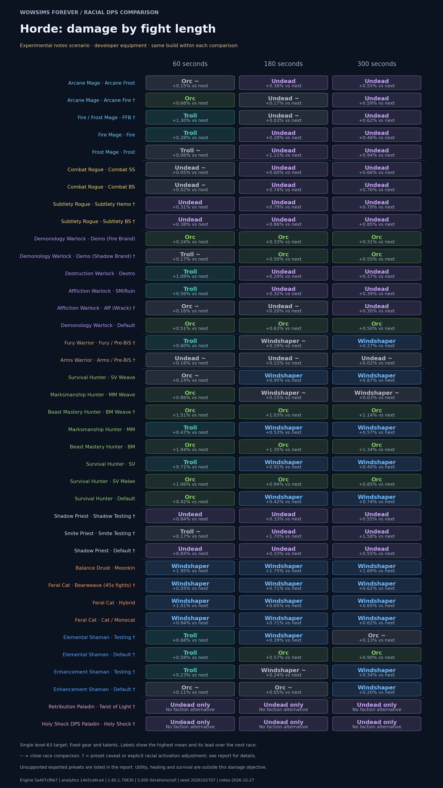
| Developer preset | 60 seconds | 180 seconds | 300 seconds | Preset caveats |
|---|---|---|---|---|
| Mage | ||||
| Arcane FrostArcane Mage · Developer P1 | Orc ≈ TrollPrimary mean: 804.30 DPS · +0.146% vs next · ±0.097 ppPair confirmation: Orc +0.140% ±0.048 pp · 20,000/race | UndeadPrimary mean: 695.24 DPS · +0.383% vs next · ±0.103 pp | UndeadPrimary mean: 689.62 DPS · +0.549% vs next · ±0.092 pp | |
| Arcane FireArcane Mage · Developer P1 | OrcPrimary mean: 902.38 DPS · +0.683% vs next · ±0.172 pp | Undead ≈ OrcPrimary mean: 777.15 DPS · +0.173% vs next · ±0.128 ppPair confirmation: Undead +0.274% ±0.065 pp · 20,000/race | UndeadPrimary mean: 711.21 DPS · +0.592% vs next · ±0.132 pp | Mana-limited |
| FFBFire / Frost Mage · Developer P1 | TrollPrimary mean: 815.83 DPS · +1.297% vs next · ±0.208 pp | Undead ≈ OrcPrimary mean: 774.24 DPS · +0.030% vs next · ±0.159 ppPair confirmation: Undead +0.109% ±0.080 pp · 20,000/race | UndeadPrimary mean: 682.95 DPS · +0.616% vs next · ±0.145 pp | Mana-limited |
| FireFire Mage · Developer P1 | TrollPrimary mean: 862.36 DPS · +0.284% vs next · ±0.215 ppPair confirmation: Troll +0.298% ±0.107 pp · 20,000/race | UndeadPrimary mean: 821.82 DPS · +0.285% vs next · ±0.167 ppPair confirmation: Undead +0.329% ±0.084 pp · 20,000/race | UndeadPrimary mean: 814.57 DPS · +0.459% vs next · ±0.137 pp | |
| FrostFrost Mage · Developer P1 | Troll ≈ UndeadPrimary mean: 632.44 DPS · +0.060% vs next · ±0.151 ppPair confirmation: Troll +0.147% ±0.077 pp · 20,000/race | UndeadPrimary mean: 606.62 DPS · +1.114% vs next · ±0.123 pp | UndeadPrimary mean: 596.16 DPS · +0.936% vs next · ±0.093 pp | |
| Rogue | ||||
| Combat SSCombat Rogue · Developer P1 | Undead ≈ TrollPrimary mean: 810.20 DPS · +0.055% vs next · ±0.117 ppPair confirmation: Undead +0.014% ±0.059 pp · 20,000/race | UndeadPrimary mean: 707.17 DPS · +0.597% vs next · ±0.075 pp | UndeadPrimary mean: 688.75 DPS · +0.660% vs next · ±0.061 pp | |
| Combat BSCombat Rogue · Developer P1 | Undead ≈ TrollPrimary mean: 809.49 DPS · +0.025% vs next · ±0.090 ppPair confirmation: Troll +0.117% ±0.045 pp · 20,000/race | UndeadPrimary mean: 704.57 DPS · +0.738% vs next · ±0.054 pp | UndeadPrimary mean: 685.86 DPS · +0.760% vs next · ±0.045 pp | |
| Subtlety HemoSubtlety Rogue · Developer P1 | UndeadPrimary mean: 754.03 DPS · +0.308% vs next · ±0.132 pp | UndeadPrimary mean: 673.34 DPS · +0.789% vs next · ±0.084 pp | UndeadPrimary mean: 661.61 DPS · +0.789% vs next · ±0.067 pp | Unresolved condition |
| Subtlety BSSubtlety Rogue · Developer P1 | UndeadPrimary mean: 727.31 DPS · +0.379% vs next · ±0.113 pp | UndeadPrimary mean: 652.90 DPS · +0.865% vs next · ±0.073 pp | UndeadPrimary mean: 640.99 DPS · +0.852% vs next · ±0.059 pp | Unresolved condition |
| Warlock | ||||
| Demo (Fire Brand)Demonology Warlock · Developer pre-raid | OrcPrimary mean: 764.53 DPS · +0.235% vs next · ±0.142 ppPair confirmation: Orc +0.354% ±0.070 pp · 20,000/race | OrcPrimary mean: 760.95 DPS · +0.327% vs next · ±0.097 pp | OrcPrimary mean: 752.73 DPS · +0.312% vs next · ±0.080 pp | |
| Demo (Shadow Brand)Demonology Warlock · Developer pre-raid | Troll ≈ OrcPrimary mean: 754.24 DPS · +0.167% vs next · ±0.244 ppPair confirmation: Orc +0.097% ±0.122 pp · 20,000/race | OrcPrimary mean: 737.68 DPS · +0.495% vs next · ±0.151 pp | OrcPrimary mean: 729.92 DPS · +0.549% vs next · ±0.120 pp | Rotation caveat |
| DestroDestruction Warlock · Developer pre-raid | TrollPrimary mean: 706.17 DPS · +1.092% vs next · ±0.139 pp | UndeadPrimary mean: 669.59 DPS · +0.286% vs next · ±0.099 ppPair confirmation: Undead +0.293% ±0.049 pp · 20,000/race | UndeadPrimary mean: 667.94 DPS · +0.375% vs next · ±0.084 pp | |
| SM/RuinAffliction Warlock · Developer pre-raid | TrollPrimary mean: 668.23 DPS · +0.559% vs next · ±0.238 pp | UndeadPrimary mean: 651.76 DPS · +0.322% vs next · ±0.152 pp | UndeadPrimary mean: 647.79 DPS · +0.395% vs next · ±0.124 pp | |
| Aff (Wrack)Affliction Warlock · Developer pre-raid | Orc ≈ UndeadPrimary mean: 588.36 DPS · +0.161% vs next · ±0.147 ppPair confirmation: Orc +0.198% ±0.073 pp · 20,000/race | Undead ≈ OrcPrimary mean: 535.66 DPS · +0.198% vs next · ±0.113 ppPair confirmation: Undead +0.217% ±0.056 pp · 20,000/race | UndeadPrimary mean: 531.73 DPS · +0.298% vs next · ±0.092 ppPair confirmation: Undead +0.313% ±0.046 pp · 20,000/race | Mana-limited |
| DefaultDemonology Warlock · Developer pre-raid | OrcPrimary mean: 740.29 DPS · +0.512% vs next · ±0.135 pp | OrcPrimary mean: 711.80 DPS · +0.627% vs next · ±0.100 pp | OrcPrimary mean: 705.63 DPS · +0.499% vs next · ±0.080 pp | |
| Warrior | ||||
| Fury / Pre-BiSFury Warrior · Developer pre-raid | TrollPrimary mean: 928.36 DPS · +0.605% vs next · ±0.203 pp | Windshaper ≈ UndeadPrimary mean: 867.00 DPS · +0.194% vs next · ±0.132 ppPair confirmation: Windshaper +0.310% ±0.067 pp · 20,000/race | WindshaperPrimary mean: 865.94 DPS · +0.265% vs next · ±0.104 ppPair confirmation: Windshaper +0.221% ±0.051 pp · 20,000/race | Unresolved condition |
| Arms / Pre-BiSArms Warrior · Developer pre-raid | Undead ≈ OrcPrimary mean: 793.36 DPS · +0.163% vs next · ±0.024 ppPair confirmation: Undead +0.164% ±0.013 pp · 20,000/race | Undead ≈ WindshaperPrimary mean: 761.55 DPS · +0.154% vs next · ±0.121 ppPair confirmation: Undead +0.140% ±0.060 pp · 20,000/race | Undead ≈ WindshaperPrimary mean: 749.20 DPS · +0.022% vs next · ±0.094 ppPair confirmation: Windshaper +0.033% ±0.047 pp · 20,000/race | Unresolved condition |
| Hunter | ||||
| SV WeaveSurvival Hunter · Developer P1 | Orc ≈ TrollPrimary mean: 1079.60 DPS · +0.137% vs next · ±0.086 ppPair confirmation: Orc +0.057% ±0.044 pp · 20,000/race | WindshaperPrimary mean: 1069.38 DPS · +0.948% vs next · ±0.070 pp | WindshaperPrimary mean: 1066.27 DPS · +0.870% vs next · ±0.056 pp | |
| MM WeaveMarksmanship Hunter · Developer P1 | OrcPrimary mean: 1031.29 DPS · +0.861% vs next · ±0.095 pp | Windshaper ≈ OrcPrimary mean: 999.82 DPS · +0.145% vs next · ±0.058 ppPair confirmation: Windshaper +0.163% ±0.029 pp · 20,000/race | Windshaper ≈ OrcPrimary mean: 1000.38 DPS · +0.031% vs next · ±0.046 ppPair confirmation: Windshaper +0.044% ±0.023 pp · 20,000/race | |
| BM WeaveBeast Mastery Hunter · Developer P1 | OrcPrimary mean: 1040.85 DPS · +1.505% vs next · ±0.085 pp | OrcPrimary mean: 1001.10 DPS · +1.026% vs next · ±0.057 pp | OrcPrimary mean: 977.45 DPS · +1.137% vs next · ±0.051 pp | Mana-limited |
| MMMarksmanship Hunter · Developer P1 | TrollPrimary mean: 788.43 DPS · +0.471% vs next · ±0.066 pp | WindshaperPrimary mean: 761.27 DPS · +0.525% vs next · ±0.038 pp | WindshaperPrimary mean: 765.29 DPS · +0.569% vs next · ±0.027 pp | |
| BMBeast Mastery Hunter · Developer P1 | OrcPrimary mean: 884.70 DPS · +1.937% vs next · ±0.080 pp | OrcPrimary mean: 847.62 DPS · +1.351% vs next · ±0.047 pp | OrcPrimary mean: 839.69 DPS · +1.342% vs next · ±0.038 pp | |
| SVSurvival Hunter · Developer P1 | TrollPrimary mean: 709.00 DPS · +0.713% vs next · ±0.058 pp | WindshaperPrimary mean: 678.24 DPS · +0.906% vs next · ±0.036 pp | WindshaperPrimary mean: 669.35 DPS · +0.401% vs next · ±0.029 pp | |
| SV MeleeSurvival Hunter · Developer P1 | OrcPrimary mean: 833.96 DPS · +1.062% vs next · ±0.116 pp | OrcPrimary mean: 786.07 DPS · +0.939% vs next · ±0.073 pp | OrcPrimary mean: 776.92 DPS · +0.845% vs next · ±0.058 pp | |
| DefaultSurvival Hunter · Developer P1 | OrcPrimary mean: 1082.52 DPS · +0.420% vs next · ±0.115 pp | WindshaperPrimary mean: 1064.35 DPS · +0.425% vs next · ±0.070 pp | WindshaperPrimary mean: 1063.72 DPS · +0.743% vs next · ±0.055 pp | |
| Priest | ||||
| Shadow TestingShadow Priest · Developer testing | UndeadPrimary mean: 798.23 DPS · +0.844% vs next · ±0.105 pp | UndeadPrimary mean: 792.41 DPS · +0.329% vs next · ±0.060 pp | UndeadPrimary mean: 797.50 DPS · +0.554% vs next · ±0.048 pp | Testing gear |
| Smite TestingSmite Priest · Developer testing | Troll ≈ UndeadPrimary mean: 526.57 DPS · +0.167% vs next · ±0.085 ppPair confirmation: Troll +0.197% ±0.042 pp · 20,000/race | UndeadPrimary mean: 418.86 DPS · +1.695% vs next · ±0.087 pp | UndeadPrimary mean: 383.26 DPS · +1.585% vs next · ±0.072 pp | Testing gearRacial action added |
| DefaultShadow Priest · Developer testing | UndeadPrimary mean: 798.23 DPS · +0.844% vs next · ±0.105 pp | UndeadPrimary mean: 792.41 DPS · +0.329% vs next · ±0.060 pp | UndeadPrimary mean: 797.50 DPS · +0.554% vs next · ±0.048 pp | Testing gear |
| Druid | ||||
| MoonkinBalance Druid · Developer pre-raid | WindshaperPrimary mean: 707.78 DPS · +1.951% vs next · ±0.133 pp | WindshaperPrimary mean: 710.12 DPS · +1.751% vs next · ±0.091 pp | WindshaperPrimary mean: 711.11 DPS · +1.693% vs next · ±0.074 pp | |
| Bearweave (45s fights)Feral Cat · Developer pre-raid | WindshaperPrimary mean: 867.27 DPS · +0.555% vs next · ±0.087 pp | WindshaperPrimary mean: 804.80 DPS · +0.714% vs next · ±0.045 pp | WindshaperPrimary mean: 800.96 DPS · +0.618% vs next · ±0.034 pp | 45s preset |
| HybridFeral Cat · Developer pre-raid | WindshaperPrimary mean: 855.53 DPS · +1.011% vs next · ±0.074 pp | WindshaperPrimary mean: 792.93 DPS · +0.650% vs next · ±0.046 pp | WindshaperPrimary mean: 786.92 DPS · +0.651% vs next · ±0.033 pp | |
| Cat / MonocatFeral Cat · Developer pre-raid | WindshaperPrimary mean: 867.81 DPS · +0.935% vs next · ±0.073 pp | WindshaperPrimary mean: 804.95 DPS · +0.708% vs next · ±0.044 pp | WindshaperPrimary mean: 801.15 DPS · +0.622% vs next · ±0.034 pp | |
| Shaman | ||||
| TestingElemental Shaman · Developer testing | TrollPrimary mean: 623.63 DPS · +0.684% vs next · ±0.202 pp | WindshaperPrimary mean: 599.18 DPS · +0.387% vs next · ±0.108 pp | Orc ≈ WindshaperPrimary mean: 584.35 DPS · +0.134% vs next · ±0.093 ppPair confirmation: Orc +0.079% ±0.047 pp · 20,000/race | Testing gearMana-limited |
| DefaultElemental Shaman · Developer testing | TrollPrimary mean: 594.47 DPS · +0.577% vs next · ±0.198 pp | OrcPrimary mean: 515.12 DPS · +0.568% vs next · ±0.122 pp | OrcPrimary mean: 449.17 DPS · +0.902% vs next · ±0.107 pp | Testing gearMana-limited |
| TestingEnhancement Shaman · Developer testing | TrollPrimary mean: 855.17 DPS · +0.230% vs next · ±0.128 ppPair confirmation: Troll +0.233% ±0.065 pp · 20,000/race | Windshaper ≈ OrcPrimary mean: 779.12 DPS · +0.239% vs next · ±0.076 ppPair confirmation: Windshaper +0.156% ±0.038 pp · 20,000/race | WindshaperPrimary mean: 760.40 DPS · +0.340% vs next · ±0.066 pp | Testing gearMana-limited |
| DefaultEnhancement Shaman · Developer testing | Orc ≈ TrollPrimary mean: 790.56 DPS · +0.112% vs next · ±0.122 ppPair confirmation: Troll +0.007% ±0.062 pp · 20,000/race | Orc ≈ WindshaperPrimary mean: 695.65 DPS · +0.049% vs next · ±0.075 ppPair confirmation: Orc +0.050% ±0.038 pp · 20,000/race | WindshaperPrimary mean: 698.16 DPS · +0.203% vs next · ±0.061 ppPair confirmation: Windshaper +0.212% ±0.031 pp · 20,000/race | Testing gear |
| Paladin | ||||
| Twist of LightRetribution Paladin · Pre-raid placeholder | Undead onlyNo faction alternative | Undead onlyNo faction alternative | Undead onlyNo faction alternative | Placeholder |
| Holy ShockHoly Shock DPS Paladin · Pre-raid placeholder | Undead onlyNo faction alternative | Undead onlyNo faction alternative | Undead onlyNo faction alternative | Placeholder |
Horde: racial activation checks
The untouched developer APL left an offensive racial unused at every duration. The adjusted comparison prepends spell-is-known guarded casts for only those missing racial IDs, identically for every race. Equipment and all original priority entries remain fixed. No other cooldown actions are inserted; their scheduling rules remain unchanged. This is a controlled adjustment, not a claim of an optimal racial rotation. Unaffected races must reproduce every original damage iteration.
Original versus adjusted DPS and racial casts per iteration
| Build | Fight | Race | Original DPS | Adjusted DPS | Change | Racial casts |
|---|---|---|---|---|---|---|
| Smite Testing | 60s | Troll | 518.12 | 526.57 | +1.632% | 0.000 → 1.000 |
| Smite Testing | 60s | Undead | 525.70 | 525.70 | +0.000% | 0.000 → 0.000 |
| Smite Testing | 180s | Undead | 418.86 | 418.86 | +0.000% | 0.000 → 0.000 |
| Smite Testing | 180s | Troll | 410.89 | 411.87 | +0.240% | 0.000 → 1.005 |
| Smite Testing | 300s | Undead | 383.26 | 383.26 | +0.000% | 0.000 → 0.000 |
| Smite Testing | 300s | Troll | 375.23 | 377.28 | +0.547% | 0.000 → 2.000 |
Horde: enemy-type sensitivity
Only enemy type changes, using the same effective rotation. These results apply at 180 seconds.
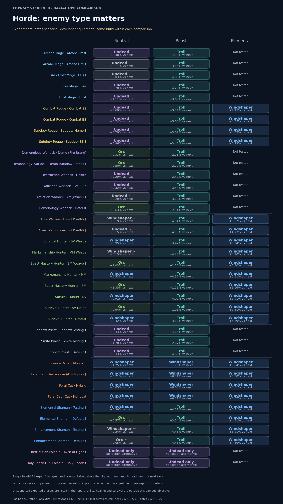
Horde / Mage
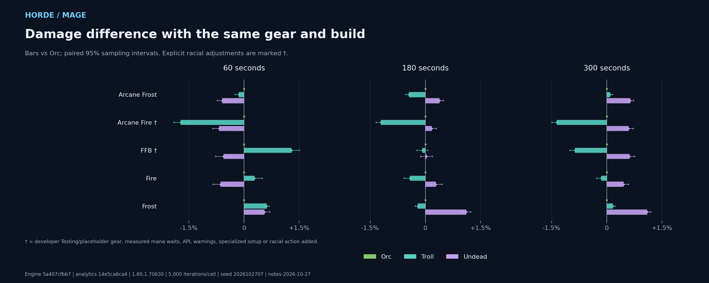
- Arcane Fire: Mana-limited Mean recorded out-of-mana time exceeds 5% of fight length in at least one cell.
- FFB: Mana-limited Mean recorded out-of-mana time exceeds 5% of fight length in at least one cell.
Exact DPS, paired uncertainty, mana waits and pet damage
| Build | Fight | Race | DPS | 95% half-width | vs Orc | Paired half-width | OOM time | Pet DPS | Offensive racial casts | Read Leyline casts |
|---|---|---|---|---|---|---|---|---|---|---|
| Arcane Frost | 60s | Orc | 804.30 | ±2.03 | +0.000% | ±0.000 pp | 0.00s | 0.00 | 1 | None |
| Arcane Frost | 60s | Troll | 803.13 | ±2.00 | -0.146% | ±0.097 pp | 0.00s | 0.00 | 1 | None |
| Arcane Frost | 60s | Undead | 799.50 | ±2.00 | -0.597% | ±0.129 pp | 0.00s | 0.00 | None | None |
| Arcane Frost | 180s | Undead | 695.24 | ±1.09 | +0.383% | ±0.103 pp | 0.01s | 0.00 | None | None |
| Arcane Frost | 180s | Orc | 692.59 | ±1.10 | +0.000% | ±0.000 pp | 0.01s | 0.00 | 2 | None |
| Arcane Frost | 180s | Troll | 689.45 | ±1.11 | -0.453% | ±0.080 pp | 0.01s | 0.00 | 1 | None |
| Arcane Frost | 300s | Undead | 689.62 | ±0.87 | +0.643% | ±0.090 pp | 0.02s | 0.00 | None | None |
| Arcane Frost | 300s | Troll | 685.85 | ±0.87 | +0.093% | ±0.067 pp | 0.05s | 0.00 | 2 | None |
| Arcane Frost | 300s | Orc | 685.21 | ±0.87 | +0.000% | ±0.000 pp | 0.03s | 0.00 | 3 | None |
| Arcane Fire | 60s | Orc | 902.38 | ±2.47 | +0.000% | ±0.000 pp | 0.09s | 0.00 | 1 | None |
| Arcane Fire | 60s | Undead | 896.26 | ±2.45 | -0.678% | ±0.170 pp | 0.08s | 0.00 | None | None |
| Arcane Fire | 60s | Troll | 886.84 | ±2.59 | -1.722% | ±0.181 pp | 0.15s | 0.00 | 1 | None |
| Arcane Fire | 180s | Undead | 777.15 | ±1.32 | +0.173% | ±0.128 pp | 6.95s | 0.00 | None | None |
| Arcane Fire | 180s | Orc | 775.81 | ±1.34 | +0.000% | ±0.000 pp | 7.09s | 0.00 | 2 | None |
| Arcane Fire | 180s | Troll | 766.41 | ±1.39 | -1.212% | ±0.129 pp | 9.40s | 0.00 | 1 | None |
| Arcane Fire | 300s | Undead | 711.21 | ±1.24 | +0.592% | ±0.132 pp | 59.92s | 0.00 | None | None |
| Arcane Fire | 300s | Orc | 707.02 | ±1.25 | +0.000% | ±0.000 pp | 60.60s | 0.00 | 3 | None |
| Arcane Fire | 300s | Troll | 697.39 | ±1.26 | -1.362% | ±0.130 pp | 65.50s | 0.00 | 2 | None |
| FFB | 60s | Troll | 815.83 | ±2.73 | +1.297% | ±0.208 pp | 0.00s | 0.00 | 1 | None |
| FFB | 60s | Orc | 805.39 | ±2.75 | +0.000% | ±0.000 pp | 0.00s | 0.00 | 1 | None |
| FFB | 60s | Undead | 800.89 | ±2.68 | -0.558% | ±0.207 pp | 0.00s | 0.00 | None | None |
| FFB | 180s | Undead | 774.24 | ±1.58 | +0.030% | ±0.159 pp | 0.00s | 0.00 | None | None |
| FFB | 180s | Orc | 774.01 | ±1.60 | +0.000% | ±0.000 pp | 0.00s | 0.00 | 2 | None |
| FFB | 180s | Troll | 773.38 | ±1.61 | -0.081% | ±0.150 pp | 0.00s | 0.00 | 1 | None |
| FFB | 300s | Undead | 682.95 | ±1.22 | +0.616% | ±0.145 pp | 60.77s | 0.00 | None | None |
| FFB | 300s | Orc | 678.76 | ±1.23 | +0.000% | ±0.000 pp | 61.76s | 0.00 | 3 | None |
| FFB | 300s | Troll | 672.92 | ±1.23 | -0.862% | ±0.136 pp | 65.13s | 0.00 | 2 | None |
| Fire | 60s | Troll | 862.36 | ±2.23 | +0.284% | ±0.215 pp | 0.00s | 0.00 | 1 | None |
| Fire | 60s | Orc | 859.91 | ±2.26 | +0.000% | ±0.000 pp | 0.00s | 0.00 | 1 | None |
| Fire | 60s | Undead | 854.44 | ±2.23 | -0.637% | ±0.210 pp | 0.00s | 0.00 | None | None |
| Fire | 180s | Undead | 821.82 | ±1.41 | +0.285% | ±0.167 pp | 0.00s | 0.00 | None | None |
| Fire | 180s | Orc | 819.49 | ±1.44 | +0.000% | ±0.000 pp | 0.00s | 0.00 | 2 | None |
| Fire | 180s | Troll | 816.03 | ±1.40 | -0.422% | ±0.160 pp | 0.00s | 0.00 | 1 | None |
| Fire | 300s | Undead | 814.57 | ±1.12 | +0.459% | ±0.137 pp | 0.01s | 0.00 | None | None |
| Fire | 300s | Orc | 810.85 | ±1.13 | +0.000% | ±0.000 pp | 0.00s | 0.00 | 3 | None |
| Fire | 300s | Troll | 809.65 | ±1.11 | -0.147% | ±0.133 pp | 0.01s | 0.00 | 2 | None |
| Frost | 60s | Troll | 632.44 | ±1.55 | +0.616% | ±0.067 pp | 0.00s | 0.00 | 1 | None |
| Frost | 60s | Undead | 632.06 | ±1.55 | +0.557% | ±0.146 pp | 0.00s | 0.00 | None | None |
| Frost | 60s | Orc | 628.56 | ±1.56 | +0.000% | ±0.000 pp | 0.00s | 0.00 | 1 | None |
| Frost | 180s | Undead | 606.62 | ±0.96 | +1.114% | ±0.123 pp | 0.13s | 0.00 | None | None |
| Frost | 180s | Orc | 599.94 | ±0.96 | +0.000% | ±0.000 pp | 0.14s | 0.00 | 2 | None |
| Frost | 180s | Troll | 598.69 | ±0.98 | -0.209% | ±0.068 pp | 0.16s | 0.00 | 1 | None |
| Frost | 300s | Undead | 596.16 | ±0.69 | +1.103% | ±0.092 pp | 0.66s | 0.00 | None | None |
| Frost | 300s | Troll | 590.63 | ±0.68 | +0.165% | ±0.060 pp | 0.85s | 0.00 | 2 | None |
| Frost | 300s | Orc | 589.65 | ±0.69 | +0.000% | ±0.000 pp | 0.69s | 0.00 | 3 | None |
Horde / Rogue
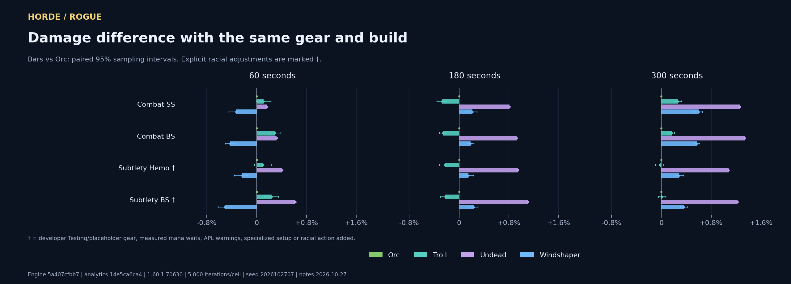
- Subtlety Hemo: Unresolved condition An APL condition is unresolved. See the exact validation dump.
- Subtlety BS: Unresolved condition An APL condition is unresolved. See the exact validation dump.
Exact DPS, paired uncertainty, mana waits and pet damage
| Build | Fight | Race | DPS | 95% half-width | vs Orc | Paired half-width | OOM time | Pet DPS | Offensive racial casts | Read Leyline casts |
|---|---|---|---|---|---|---|---|---|---|---|
| Combat SS | 60s | Undead | 810.20 | ±1.57 | +0.167% | ±0.011 pp | 0.00s | 0.00 | None | None |
| Combat SS | 60s | Troll | 809.76 | ±1.60 | +0.113% | ±0.118 pp | 0.00s | 0.00 | 1 | None |
| Combat SS | 60s | Orc | 808.85 | ±1.60 | +0.000% | ±0.000 pp | 0.00s | 0.00 | 1 | None |
| Combat SS | 60s | Windshaper | 806.16 | ±1.60 | -0.333% | ±0.114 pp | 0.00s | 0.00 | None | None |
| Combat SS | 180s | Undead | 707.17 | ±0.88 | +0.813% | ±0.009 pp | 0.00s | 0.00 | None | None |
| Combat SS | 180s | Windshaper | 702.97 | ±0.89 | +0.214% | ±0.076 pp | 0.00s | 0.00 | None | None |
| Combat SS | 180s | Orc | 701.47 | ±0.89 | +0.000% | ±0.000 pp | 0.00s | 0.00 | 2 | None |
| Combat SS | 180s | Troll | 699.53 | ±0.89 | -0.277% | ±0.076 pp | 0.00s | 0.00 | 1 | None |
| Combat SS | 300s | Undead | 688.75 | ±0.67 | +1.261% | ±0.011 pp | 0.00s | 0.00 | None | None |
| Combat SS | 300s | Windshaper | 684.23 | ±0.68 | +0.597% | ±0.062 pp | 0.00s | 0.00 | None | None |
| Combat SS | 300s | Troll | 681.97 | ±0.68 | +0.264% | ±0.061 pp | 0.00s | 0.00 | 2 | None |
| Combat SS | 300s | Orc | 680.17 | ±0.68 | +0.000% | ±0.000 pp | 0.00s | 0.00 | 2 | None |
| Combat BS | 60s | Undead | 809.49 | ±1.42 | +0.321% | ±0.011 pp | 0.00s | 0.00 | None | None |
| Combat BS | 60s | Troll | 809.29 | ±1.44 | +0.296% | ±0.090 pp | 0.00s | 0.00 | 1 | None |
| Combat BS | 60s | Orc | 806.90 | ±1.44 | +0.000% | ±0.000 pp | 0.00s | 0.00 | 1 | None |
| Combat BS | 60s | Windshaper | 803.45 | ±1.43 | -0.428% | ±0.077 pp | 0.00s | 0.00 | None | None |
| Combat BS | 180s | Undead | 704.57 | ±0.78 | +0.923% | ±0.009 pp | 0.00s | 0.00 | None | None |
| Combat BS | 180s | Windshaper | 699.41 | ±0.79 | +0.184% | ±0.054 pp | 0.00s | 0.00 | None | None |
| Combat BS | 180s | Orc | 698.12 | ±0.79 | +0.000% | ±0.000 pp | 0.00s | 0.00 | 2 | None |
| Combat BS | 180s | Troll | 696.32 | ±0.78 | -0.259% | ±0.055 pp | 0.00s | 0.00 | 1 | None |
| Combat BS | 300s | Undead | 685.86 | ±0.60 | +1.339% | ±0.008 pp | 0.00s | 0.00 | None | None |
| Combat BS | 300s | Windshaper | 680.69 | ±0.60 | +0.575% | ±0.045 pp | 0.00s | 0.00 | None | None |
| Combat BS | 300s | Troll | 677.91 | ±0.60 | +0.164% | ±0.045 pp | 0.00s | 0.00 | 2 | None |
| Combat BS | 300s | Orc | 676.80 | ±0.60 | +0.000% | ±0.000 pp | 0.00s | 0.00 | 2 | None |
| Subtlety Hemo | 60s | Undead | 754.03 | ±1.44 | +0.409% | ±0.014 pp | 0.00s | 0.00 | None | None |
| Subtlety Hemo | 60s | Troll | 751.71 | ±1.46 | +0.101% | ±0.132 pp | 0.00s | 0.00 | 1 | None |
| Subtlety Hemo | 60s | Orc | 750.95 | ±1.46 | +0.000% | ±0.000 pp | 0.00s | 0.00 | 1 | None |
| Subtlety Hemo | 60s | Windshaper | 749.16 | ±1.49 | -0.239% | ±0.117 pp | 0.00s | 0.00 | None | None |
| Subtlety Hemo | 180s | Undead | 673.34 | ±0.81 | +0.943% | ±0.009 pp | 0.00s | 0.00 | None | None |
| Subtlety Hemo | 180s | Windshaper | 668.07 | ±0.82 | +0.152% | ±0.084 pp | 0.00s | 0.00 | None | None |
| Subtlety Hemo | 180s | Orc | 667.05 | ±0.81 | +0.000% | ±0.000 pp | 0.00s | 0.00 | 2 | None |
| Subtlety Hemo | 180s | Troll | 665.52 | ±0.80 | -0.230% | ±0.085 pp | 0.00s | 0.00 | 1 | None |
| Subtlety Hemo | 300s | Undead | 661.61 | ±0.62 | +1.078% | ±0.008 pp | 0.00s | 0.00 | None | None |
| Subtlety Hemo | 300s | Windshaper | 656.43 | ±0.63 | +0.287% | ±0.067 pp | 0.00s | 0.00 | None | None |
| Subtlety Hemo | 300s | Orc | 654.56 | ±0.63 | +0.000% | ±0.000 pp | 0.00s | 0.00 | 3 | None |
| Subtlety Hemo | 300s | Troll | 654.37 | ±0.62 | -0.028% | ±0.068 pp | 0.00s | 0.00 | 2 | None |
| Subtlety BS | 60s | Undead | 727.31 | ±1.31 | +0.619% | ±0.014 pp | 0.00s | 0.00 | None | None |
| Subtlety BS | 60s | Troll | 724.57 | ±1.30 | +0.239% | ±0.113 pp | 0.00s | 0.00 | 1 | None |
| Subtlety BS | 60s | Orc | 722.84 | ±1.33 | +0.000% | ±0.000 pp | 0.00s | 0.00 | 1 | None |
| Subtlety BS | 60s | Windshaper | 719.11 | ±1.31 | -0.515% | ±0.103 pp | 0.00s | 0.00 | None | None |
| Subtlety BS | 180s | Undead | 652.90 | ±0.76 | +1.101% | ±0.010 pp | 0.00s | 0.00 | None | None |
| Subtlety BS | 180s | Windshaper | 647.30 | ±0.76 | +0.234% | ±0.073 pp | 0.00s | 0.00 | None | None |
| Subtlety BS | 180s | Orc | 645.79 | ±0.77 | +0.000% | ±0.000 pp | 0.00s | 0.00 | 2 | None |
| Subtlety BS | 180s | Troll | 644.35 | ±0.76 | -0.223% | ±0.075 pp | 0.00s | 0.00 | 1 | None |
| Subtlety BS | 300s | Undead | 640.99 | ±0.59 | +1.222% | ±0.009 pp | 0.00s | 0.00 | None | None |
| Subtlety BS | 300s | Windshaper | 635.57 | ±0.58 | +0.367% | ±0.059 pp | 0.00s | 0.00 | None | None |
| Subtlety BS | 300s | Troll | 633.34 | ±0.58 | +0.013% | ±0.059 pp | 0.00s | 0.00 | 2 | None |
| Subtlety BS | 300s | Orc | 633.25 | ±0.59 | +0.000% | ±0.000 pp | 0.00s | 0.00 | 3 | None |
Horde / Warlock
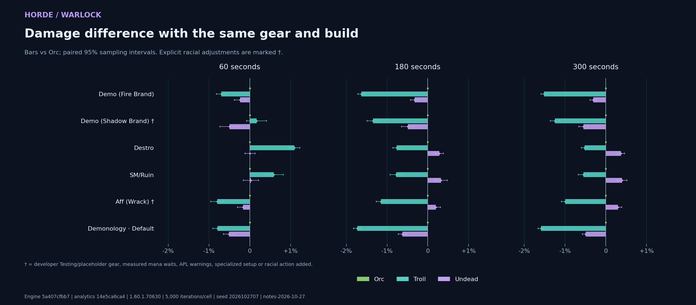
- Demo (Shadow Brand): Rotation caveat Unresolved aura 1323392 removes a condition branch in the developer Shadow Brand rotation.
- Aff (Wrack): Mana-limited Mean recorded out-of-mana time exceeds 5% of fight length in at least one cell.
Exact DPS, paired uncertainty, mana waits and pet damage
| Build | Fight | Race | DPS | 95% half-width | vs Orc | Paired half-width | OOM time | Pet DPS | Offensive racial casts | Read Leyline casts |
|---|---|---|---|---|---|---|---|---|---|---|
| Demo (Fire Brand) | 60s | Orc | 764.53 | ±1.31 | +0.000% | ±0.000 pp | 0.00s | 156.89 | 1 | None |
| Demo (Fire Brand) | 60s | Undead | 762.73 | ±1.30 | -0.235% | ±0.141 pp | 0.00s | 147.78 | None | None |
| Demo (Fire Brand) | 60s | Troll | 759.20 | ±1.29 | -0.696% | ±0.119 pp | 0.00s | 148.14 | 1 | None |
| Demo (Fire Brand) | 180s | Orc | 760.95 | ±0.79 | +0.000% | ±0.000 pp | 0.05s | 161.38 | 2 | None |
| Demo (Fire Brand) | 180s | Undead | 758.47 | ±0.79 | -0.326% | ±0.097 pp | 0.06s | 152.94 | None | None |
| Demo (Fire Brand) | 180s | Troll | 748.55 | ±0.80 | -1.630% | ±0.089 pp | 0.02s | 152.92 | 1 | None |
| Demo (Fire Brand) | 300s | Orc | 752.73 | ±0.62 | +0.000% | ±0.000 pp | 0.08s | 162.62 | 3 | None |
| Demo (Fire Brand) | 300s | Undead | 750.39 | ±0.61 | -0.311% | ±0.080 pp | 0.08s | 154.20 | None | None |
| Demo (Fire Brand) | 300s | Troll | 741.32 | ±0.61 | -1.516% | ±0.075 pp | 0.05s | 154.17 | 2 | None |
| Demo (Shadow Brand) | 60s | Troll | 754.24 | ±1.82 | +0.167% | ±0.244 pp | 0.00s | 127.50 | 1 | None |
| Demo (Shadow Brand) | 60s | Orc | 752.98 | ±1.80 | +0.000% | ±0.000 pp | 0.00s | 134.34 | 1 | None |
| Demo (Shadow Brand) | 60s | Undead | 749.24 | ±1.81 | -0.497% | ±0.233 pp | 0.00s | 127.50 | None | None |
| Demo (Shadow Brand) | 180s | Orc | 737.68 | ±1.08 | +0.000% | ±0.000 pp | 0.13s | 137.96 | 2 | None |
| Demo (Shadow Brand) | 180s | Undead | 734.04 | ±1.05 | -0.493% | ±0.149 pp | 0.13s | 131.04 | None | None |
| Demo (Shadow Brand) | 180s | Troll | 727.77 | ±1.05 | -1.343% | ±0.148 pp | 0.12s | 131.14 | 1 | None |
| Demo (Shadow Brand) | 300s | Orc | 729.92 | ±0.82 | +0.000% | ±0.000 pp | 0.12s | 139.34 | 3 | None |
| Demo (Shadow Brand) | 300s | Undead | 725.94 | ±0.81 | -0.546% | ±0.119 pp | 0.13s | 132.39 | None | None |
| Demo (Shadow Brand) | 300s | Troll | 720.81 | ±0.81 | -1.248% | ±0.118 pp | 0.13s | 132.51 | 2 | None |
| Destro | 60s | Troll | 706.17 | ±1.34 | +1.098% | ±0.132 pp | 0.00s | 55.10 | 1 | None |
| Destro | 60s | Undead | 698.54 | ±1.28 | +0.006% | ±0.121 pp | 0.00s | 55.17 | None | None |
| Destro | 60s | Orc | 698.50 | ±1.28 | +0.000% | ±0.000 pp | 0.00s | 57.90 | 1 | None |
| Destro | 180s | Undead | 669.59 | ±0.78 | +0.286% | ±0.099 pp | 2.24s | 55.13 | None | None |
| Destro | 180s | Orc | 667.68 | ±0.79 | +0.000% | ±0.000 pp | 2.26s | 57.81 | 2 | None |
| Destro | 180s | Troll | 662.61 | ±0.79 | -0.760% | ±0.096 pp | 2.21s | 55.10 | 1 | None |
| Destro | 300s | Undead | 667.94 | ±0.63 | +0.375% | ±0.084 pp | 1.95s | 55.20 | None | None |
| Destro | 300s | Orc | 665.45 | ±0.63 | +0.000% | ±0.000 pp | 1.95s | 57.87 | 3 | None |
| Destro | 300s | Troll | 661.99 | ±0.62 | -0.520% | ±0.080 pp | 1.93s | 55.17 | 2 | None |
| SM/Ruin | 60s | Troll | 668.23 | ±1.64 | +0.588% | ±0.234 pp | 0.00s | 54.39 | 1 | None |
| SM/Ruin | 60s | Undead | 664.51 | ±1.63 | +0.029% | ±0.185 pp | 0.00s | 54.48 | None | None |
| SM/Ruin | 60s | Orc | 664.32 | ±1.65 | +0.000% | ±0.000 pp | 0.00s | 57.19 | 1 | None |
| SM/Ruin | 180s | Undead | 651.76 | ±1.01 | +0.322% | ±0.152 pp | 0.38s | 54.23 | None | None |
| SM/Ruin | 180s | Orc | 649.67 | ±1.02 | +0.000% | ±0.000 pp | 0.38s | 56.90 | 2 | None |
| SM/Ruin | 180s | Troll | 644.63 | ±1.00 | -0.775% | ±0.151 pp | 0.42s | 54.20 | 1 | None |
| SM/Ruin | 300s | Undead | 647.79 | ±0.79 | +0.395% | ±0.124 pp | 0.44s | 54.31 | None | None |
| SM/Ruin | 300s | Orc | 645.24 | ±0.79 | +0.000% | ±0.000 pp | 0.44s | 56.95 | 3 | None |
| SM/Ruin | 300s | Troll | 641.70 | ±0.79 | -0.550% | ±0.125 pp | 0.40s | 54.27 | 2 | None |
| Aff (Wrack) | 60s | Orc | 588.36 | ±1.20 | +0.000% | ±0.000 pp | 0.98s | 55.89 | 1 | None |
| Aff (Wrack) | 60s | Undead | 587.41 | ±1.19 | -0.161% | ±0.146 pp | 0.98s | 53.24 | None | None |
| Aff (Wrack) | 60s | Troll | 583.67 | ±1.15 | -0.798% | ±0.157 pp | 1.15s | 53.19 | 1 | None |
| Aff (Wrack) | 180s | Undead | 535.66 | ±0.63 | +0.198% | ±0.113 pp | 23.58s | 53.04 | None | None |
| Aff (Wrack) | 180s | Orc | 534.60 | ±0.65 | +0.000% | ±0.000 pp | 23.45s | 55.64 | 2 | None |
| Aff (Wrack) | 180s | Troll | 528.47 | ±0.62 | -1.148% | ±0.114 pp | 24.50s | 53.02 | 1 | None |
| Aff (Wrack) | 300s | Undead | 531.73 | ±0.48 | +0.298% | ±0.092 pp | 46.68s | 53.13 | None | None |
| Aff (Wrack) | 300s | Orc | 530.15 | ±0.49 | +0.000% | ±0.000 pp | 46.30s | 55.74 | 3 | None |
| Aff (Wrack) | 300s | Troll | 524.85 | ±0.48 | -0.999% | ±0.091 pp | 47.59s | 53.13 | 2 | None |
| Default | 60s | Orc | 740.29 | ±1.21 | +0.000% | ±0.000 pp | 0.00s | 152.66 | 1 | None |
| Default | 60s | Undead | 736.52 | ±1.20 | -0.510% | ±0.133 pp | 0.00s | 144.04 | None | None |
| Default | 60s | Troll | 734.44 | ±1.19 | -0.790% | ±0.114 pp | 0.00s | 144.08 | 1 | None |
| Default | 180s | Orc | 711.80 | ±0.75 | +0.000% | ±0.000 pp | 0.44s | 156.10 | 2 | None |
| Default | 180s | Undead | 707.36 | ±0.75 | -0.623% | ±0.098 pp | 0.42s | 147.89 | None | None |
| Default | 180s | Troll | 699.47 | ±0.73 | -1.732% | ±0.090 pp | 0.43s | 147.90 | 1 | None |
| Default | 300s | Orc | 705.63 | ±0.58 | +0.000% | ±0.000 pp | 0.51s | 157.26 | 3 | None |
| Default | 300s | Undead | 702.13 | ±0.57 | -0.497% | ±0.080 pp | 0.53s | 149.02 | None | None |
| Default | 300s | Troll | 694.42 | ±0.57 | -1.589% | ±0.074 pp | 0.53s | 149.07 | 2 | None |
Horde / Warrior
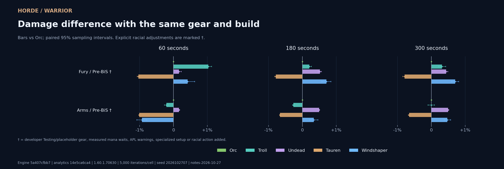
- Fury / Pre-BiS: Unresolved condition An APL condition is unresolved. See the exact validation dump.
- Arms / Pre-BiS: Unresolved condition An APL condition is unresolved. See the exact validation dump.
Exact DPS, paired uncertainty, mana waits and pet damage
| Build | Fight | Race | DPS | 95% half-width | vs Orc | Paired half-width | OOM time | Pet DPS | Offensive racial casts | Read Leyline casts |
|---|---|---|---|---|---|---|---|---|---|---|
| Fury / Pre-BiS | 60s | Troll | 928.36 | ±2.42 | +1.026% | ±0.104 pp | 0.00s | 0.00 | 1 | None |
| Fury / Pre-BiS | 60s | Windshaper | 922.78 | ±2.44 | +0.419% | ±0.206 pp | 0.00s | 0.00 | None | None |
| Fury / Pre-BiS | 60s | Undead | 920.40 | ±2.39 | +0.160% | ±0.069 pp | 0.00s | 0.00 | None | None |
| Fury / Pre-BiS | 60s | Orc | 918.93 | ±2.43 | +0.000% | ±0.000 pp | 0.00s | 0.00 | 1 | None |
| Fury / Pre-BiS | 60s | Tauren | 909.40 | ±2.39 | -1.037% | ±0.036 pp | 0.00s | 0.00 | None | None |
| Fury / Pre-BiS | 180s | Windshaper | 867.00 | ±1.39 | +0.710% | ±0.133 pp | 0.00s | 0.00 | None | None |
| Fury / Pre-BiS | 180s | Undead | 865.32 | ±1.38 | +0.515% | ±0.051 pp | 0.00s | 0.00 | None | None |
| Fury / Pre-BiS | 180s | Troll | 862.64 | ±1.39 | +0.204% | ±0.065 pp | 0.00s | 0.00 | 1 | None |
| Fury / Pre-BiS | 180s | Orc | 860.89 | ±1.39 | +0.000% | ±0.000 pp | 0.00s | 0.00 | 2 | None |
| Fury / Pre-BiS | 180s | Tauren | 854.14 | ±1.38 | -0.784% | ±0.038 pp | 0.00s | 0.00 | None | None |
| Fury / Pre-BiS | 300s | Windshaper | 865.94 | ±1.07 | +0.704% | ±0.104 pp | 0.00s | 0.00 | None | None |
| Fury / Pre-BiS | 300s | Undead | 863.64 | ±1.07 | +0.437% | ±0.053 pp | 0.00s | 0.00 | None | None |
| Fury / Pre-BiS | 300s | Troll | 862.61 | ±1.09 | +0.317% | ±0.106 pp | 0.00s | 0.00 | 2 | None |
| Fury / Pre-BiS | 300s | Orc | 859.89 | ±1.08 | +0.000% | ±0.000 pp | 0.00s | 0.00 | 3 | None |
| Fury / Pre-BiS | 300s | Tauren | 853.07 | ±1.08 | -0.793% | ±0.050 pp | 0.00s | 0.00 | None | None |
| Arms / Pre-BiS | 60s | Undead | 793.36 | ±2.37 | +0.163% | ±0.024 pp | 0.00s | 0.00 | None | None |
| Arms / Pre-BiS | 60s | Orc | 792.07 | ±2.40 | +0.000% | ±0.000 pp | 0.00s | 0.00 | 1 | None |
| Arms / Pre-BiS | 60s | Troll | 790.40 | ±2.38 | -0.210% | ±0.060 pp | 0.00s | 0.00 | 1 | None |
| Arms / Pre-BiS | 60s | Windshaper | 784.68 | ±2.40 | -0.932% | ±0.147 pp | 0.00s | 0.00 | None | None |
| Arms / Pre-BiS | 60s | Tauren | 784.05 | ±2.37 | -1.012% | ±0.015 pp | 0.00s | 0.00 | None | None |
| Arms / Pre-BiS | 180s | Undead | 761.55 | ±1.38 | +0.493% | ±0.021 pp | 0.00s | 0.00 | None | None |
| Arms / Pre-BiS | 180s | Windshaper | 760.38 | ±1.37 | +0.339% | ±0.122 pp | 0.00s | 0.00 | None | None |
| Arms / Pre-BiS | 180s | Orc | 757.81 | ±1.40 | +0.000% | ±0.000 pp | 0.00s | 0.00 | 2 | None |
| Arms / Pre-BiS | 180s | Troll | 755.79 | ±1.39 | -0.267% | ±0.025 pp | 0.00s | 0.00 | 1 | None |
| Arms / Pre-BiS | 180s | Tauren | 752.81 | ±1.39 | -0.661% | ±0.012 pp | 0.00s | 0.00 | None | None |
| Arms / Pre-BiS | 300s | Undead | 749.20 | ±1.03 | +0.495% | ±0.024 pp | 0.00s | 0.00 | None | None |
| Arms / Pre-BiS | 300s | Windshaper | 749.04 | ±1.03 | +0.473% | ±0.095 pp | 0.00s | 0.00 | None | None |
| Arms / Pre-BiS | 300s | Troll | 745.51 | ±1.05 | +0.000% | ±0.096 pp | 0.00s | 0.00 | 2 | None |
| Arms / Pre-BiS | 300s | Orc | 745.51 | ±1.04 | +0.000% | ±0.000 pp | 0.00s | 0.00 | 3 | None |
| Arms / Pre-BiS | 300s | Tauren | 740.62 | ±1.03 | -0.656% | ±0.021 pp | 0.00s | 0.00 | None | None |
Horde / Hunter
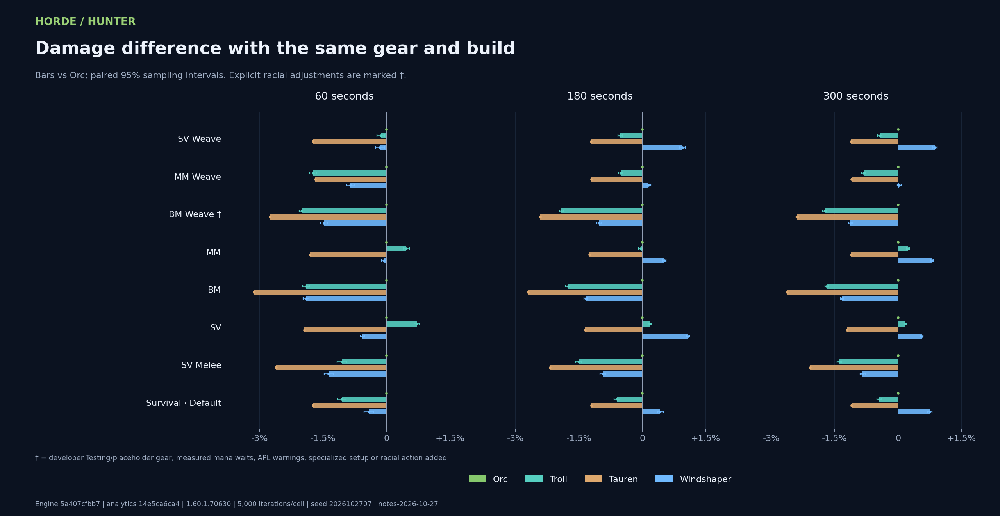
- BM Weave: Mana-limited Mean recorded out-of-mana time exceeds 5% of fight length in at least one cell.
Exact DPS, paired uncertainty, mana waits and pet damage
| Build | Fight | Race | DPS | 95% half-width | vs Orc | Paired half-width | OOM time | Pet DPS | Offensive racial casts | Read Leyline casts |
|---|---|---|---|---|---|---|---|---|---|---|
| SV Weave | 60s | Orc | 1079.60 | ±1.71 | +0.000% | ±0.000 pp | 0.00s | 0.00 | 1 | None |
| SV Weave | 60s | Troll | 1078.12 | ±1.75 | -0.137% | ±0.086 pp | 0.00s | 0.00 | 1 | None |
| SV Weave | 60s | Windshaper | 1077.89 | ±1.70 | -0.158% | ±0.106 pp | 0.00s | 0.00 | None | None |
| SV Weave | 60s | Tauren | 1060.85 | ±1.69 | -1.736% | ±0.008 pp | 0.00s | 0.00 | None | None |
| SV Weave | 180s | Windshaper | 1069.38 | ±1.00 | +0.948% | ±0.070 pp | 0.00s | 0.00 | None | None |
| SV Weave | 180s | Orc | 1059.34 | ±1.01 | +0.000% | ±0.000 pp | 0.00s | 0.00 | 2 | None |
| SV Weave | 180s | Troll | 1053.85 | ±1.01 | -0.518% | ±0.055 pp | 0.00s | 0.00 | 1 | None |
| SV Weave | 180s | Tauren | 1046.50 | ±0.99 | -1.212% | ±0.005 pp | 0.00s | 0.00 | None | None |
| SV Weave | 300s | Windshaper | 1066.27 | ±0.78 | +0.870% | ±0.056 pp | 0.00s | 0.00 | None | None |
| SV Weave | 300s | Orc | 1057.07 | ±0.80 | +0.000% | ±0.000 pp | 0.00s | 0.00 | 3 | None |
| SV Weave | 300s | Troll | 1052.53 | ±0.80 | -0.429% | ±0.049 pp | 0.00s | 0.00 | 2 | None |
| SV Weave | 300s | Tauren | 1045.34 | ±0.79 | -1.110% | ±0.003 pp | 0.00s | 0.00 | None | None |
| MM Weave | 60s | Orc | 1031.29 | ±1.59 | +0.000% | ±0.000 pp | 0.00s | 0.00 | 1 | None |
| MM Weave | 60s | Windshaper | 1022.49 | ±1.60 | -0.853% | ±0.093 pp | 0.00s | 0.00 | None | None |
| MM Weave | 60s | Tauren | 1013.95 | ±1.56 | -1.681% | ±0.008 pp | 0.00s | 0.00 | None | None |
| MM Weave | 60s | Troll | 1013.44 | ±1.54 | -1.731% | ±0.083 pp | 0.00s | 0.00 | 1 | None |
| MM Weave | 180s | Windshaper | 999.82 | ±0.89 | +0.145% | ±0.058 pp | 0.00s | 0.00 | None | None |
| MM Weave | 180s | Orc | 998.37 | ±0.89 | +0.000% | ±0.000 pp | 0.00s | 0.00 | 2 | None |
| MM Weave | 180s | Troll | 993.27 | ±0.88 | -0.511% | ±0.050 pp | 0.00s | 0.00 | 1 | None |
| MM Weave | 180s | Tauren | 986.36 | ±0.88 | -1.203% | ±0.004 pp | 0.00s | 0.00 | None | None |
| MM Weave | 300s | Windshaper | 1000.38 | ±0.69 | +0.031% | ±0.046 pp | 0.00s | 0.00 | None | None |
| MM Weave | 300s | Orc | 1000.07 | ±0.69 | +0.000% | ±0.000 pp | 0.00s | 0.00 | 3 | None |
| MM Weave | 300s | Troll | 991.89 | ±0.68 | -0.818% | ±0.040 pp | 0.00s | 0.00 | 2 | None |
| MM Weave | 300s | Tauren | 989.07 | ±0.68 | -1.100% | ±0.003 pp | 0.00s | 0.00 | None | None |
| BM Weave | 60s | Orc | 1040.85 | ±1.17 | +0.000% | ±0.000 pp | 0.00s | 352.07 | 1 | None |
| BM Weave | 60s | Windshaper | 1025.41 | ±1.17 | -1.483% | ±0.082 pp | 0.00s | 335.14 | None | None |
| BM Weave | 60s | Troll | 1019.96 | ±1.14 | -2.007% | ±0.052 pp | 0.00s | 335.21 | 1 | None |
| BM Weave | 60s | Tauren | 1012.19 | ±1.13 | -2.754% | ±0.006 pp | 0.00s | 334.09 | None | None |
| BM Weave | 180s | Orc | 1001.10 | ±0.68 | +0.000% | ±0.000 pp | 1.55s | 331.20 | 2 | None |
| BM Weave | 180s | Windshaper | 990.93 | ±0.68 | -1.015% | ±0.056 pp | 2.12s | 316.82 | None | None |
| BM Weave | 180s | Troll | 981.98 | ±0.68 | -1.910% | ±0.039 pp | 1.92s | 315.93 | 1 | None |
| BM Weave | 180s | Tauren | 976.90 | ±0.67 | -2.417% | ±0.016 pp | 1.72s | 314.89 | None | None |
| BM Weave | 300s | Orc | 977.45 | ±0.57 | +0.000% | ±0.000 pp | 21.52s | 326.76 | 3 | None |
| BM Weave | 300s | Windshaper | 966.45 | ±0.56 | -1.125% | ±0.050 pp | 22.79s | 312.31 | None | None |
| BM Weave | 300s | Troll | 960.42 | ±0.56 | -1.742% | ±0.041 pp | 21.32s | 311.84 | 2 | None |
| BM Weave | 300s | Tauren | 954.17 | ±0.56 | -2.381% | ±0.030 pp | 22.08s | 310.72 | None | None |
| MM | 60s | Troll | 788.43 | ±1.29 | +0.471% | ±0.066 pp | 0.00s | 0.00 | 1 | None |
| MM | 60s | Orc | 784.73 | ±1.31 | +0.000% | ±0.000 pp | 0.00s | 0.00 | 1 | None |
| MM | 60s | Windshaper | 784.25 | ±1.30 | -0.062% | ±0.048 pp | 0.00s | 0.00 | None | None |
| MM | 60s | Tauren | 770.50 | ±1.28 | -1.814% | ±0.010 pp | 0.00s | 0.00 | None | None |
| MM | 180s | Windshaper | 761.27 | ±0.72 | +0.525% | ±0.038 pp | 0.00s | 0.00 | None | None |
| MM | 180s | Orc | 757.29 | ±0.72 | +0.000% | ±0.000 pp | 0.00s | 0.00 | 2 | None |
| MM | 180s | Troll | 756.97 | ±0.72 | -0.043% | ±0.041 pp | 0.00s | 0.00 | 1 | None |
| MM | 180s | Tauren | 747.86 | ±0.71 | -1.246% | ±0.005 pp | 0.00s | 0.00 | None | None |
| MM | 300s | Windshaper | 765.29 | ±0.57 | +0.807% | ±0.033 pp | 0.06s | 0.00 | None | None |
| MM | 300s | Troll | 760.96 | ±0.59 | +0.236% | ±0.035 pp | 0.11s | 0.00 | 2 | None |
| MM | 300s | Orc | 759.17 | ±0.58 | +0.000% | ±0.000 pp | 0.10s | 0.00 | 3 | None |
| MM | 300s | Tauren | 750.75 | ±0.58 | -1.109% | ±0.005 pp | 0.13s | 0.00 | None | None |
| BM | 60s | Orc | 884.70 | ±1.01 | +0.000% | ±0.000 pp | 0.00s | 357.78 | 1 | None |
| BM | 60s | Troll | 867.89 | ±1.02 | -1.900% | ±0.077 pp | 0.00s | 340.30 | 1 | None |
| BM | 60s | Windshaper | 867.87 | ±1.01 | -1.901% | ±0.066 pp | 0.00s | 340.21 | None | None |
| BM | 60s | Tauren | 856.96 | ±0.97 | -3.136% | ±0.007 pp | 0.00s | 339.30 | None | None |
| BM | 180s | Orc | 847.62 | ±0.57 | +0.000% | ±0.000 pp | 0.00s | 337.73 | 2 | None |
| BM | 180s | Windshaper | 836.32 | ±0.57 | -1.333% | ±0.046 pp | 0.00s | 322.16 | None | None |
| BM | 180s | Troll | 832.69 | ±0.57 | -1.761% | ±0.047 pp | 0.00s | 322.14 | 1 | None |
| BM | 180s | Tauren | 824.72 | ±0.56 | -2.701% | ±0.005 pp | 0.00s | 321.00 | None | None |
| BM | 300s | Orc | 839.69 | ±0.45 | +0.000% | ±0.000 pp | 0.30s | 333.90 | 3 | None |
| BM | 300s | Windshaper | 828.57 | ±0.44 | -1.324% | ±0.037 pp | 0.26s | 318.63 | None | None |
| BM | 300s | Troll | 825.47 | ±0.44 | -1.694% | ±0.037 pp | 0.36s | 318.59 | 2 | None |
| BM | 300s | Tauren | 817.68 | ±0.44 | -2.621% | ±0.007 pp | 0.36s | 317.48 | None | None |
| SV | 60s | Troll | 709.00 | ±1.07 | +0.713% | ±0.058 pp | 0.00s | 0.00 | 1 | None |
| SV | 60s | Orc | 703.98 | ±1.08 | +0.000% | ±0.000 pp | 0.00s | 0.00 | 1 | None |
| SV | 60s | Windshaper | 700.00 | ±1.10 | -0.566% | ±0.045 pp | 0.00s | 0.00 | None | None |
| SV | 60s | Tauren | 690.28 | ±1.06 | -1.946% | ±0.009 pp | 0.00s | 0.00 | None | None |
| SV | 180s | Windshaper | 678.24 | ±0.60 | +1.084% | ±0.034 pp | 0.00s | 0.00 | None | None |
| SV | 180s | Troll | 672.15 | ±0.60 | +0.176% | ±0.037 pp | 0.00s | 0.00 | 1 | None |
| SV | 180s | Orc | 670.96 | ±0.61 | +0.000% | ±0.000 pp | 0.00s | 0.00 | 2 | None |
| SV | 180s | Tauren | 661.91 | ±0.60 | -1.349% | ±0.005 pp | 0.00s | 0.00 | None | None |
| SV | 300s | Windshaper | 669.35 | ±0.47 | +0.564% | ±0.029 pp | 0.57s | 0.00 | None | None |
| SV | 300s | Troll | 666.68 | ±0.47 | +0.163% | ±0.030 pp | 0.62s | 0.00 | 2 | None |
| SV | 300s | Orc | 665.59 | ±0.47 | +0.000% | ±0.000 pp | 0.51s | 0.00 | 3 | None |
| SV | 300s | Tauren | 657.53 | ±0.47 | -1.212% | ±0.006 pp | 0.62s | 0.00 | None | None |
| SV Melee | 60s | Orc | 833.96 | ±1.26 | +0.000% | ±0.000 pp | 0.00s | 235.60 | 1 | None |
| SV Melee | 60s | Troll | 825.19 | ±1.26 | -1.051% | ±0.113 pp | 0.00s | 224.35 | 1 | None |
| SV Melee | 60s | Windshaper | 822.56 | ±1.24 | -1.367% | ±0.109 pp | 0.00s | 224.78 | None | None |
| SV Melee | 60s | Tauren | 812.17 | ±1.23 | -2.613% | ±0.006 pp | 0.00s | 223.93 | None | None |
| SV Melee | 180s | Orc | 786.07 | ±0.73 | +0.000% | ±0.000 pp | 0.00s | 233.15 | 2 | None |
| SV Melee | 180s | Windshaper | 778.76 | ±0.72 | -0.931% | ±0.071 pp | 0.00s | 222.59 | None | None |
| SV Melee | 180s | Troll | 774.23 | ±0.72 | -1.506% | ±0.071 pp | 0.00s | 222.54 | 1 | None |
| SV Melee | 180s | Tauren | 768.91 | ±0.72 | -2.183% | ±0.003 pp | 0.00s | 221.97 | None | None |
| SV Melee | 300s | Orc | 776.92 | ±0.56 | +0.000% | ±0.000 pp | 0.00s | 231.91 | 3 | None |
| SV Melee | 300s | Windshaper | 770.40 | ±0.56 | -0.838% | ±0.057 pp | 0.00s | 221.57 | None | None |
| SV Melee | 300s | Troll | 766.14 | ±0.55 | -1.387% | ±0.056 pp | 0.00s | 221.54 | 2 | None |
| SV Melee | 300s | Tauren | 760.75 | ±0.55 | -2.081% | ±0.003 pp | 0.00s | 220.87 | None | None |
| Default | 60s | Orc | 1082.52 | ±1.71 | +0.000% | ±0.000 pp | 0.00s | 0.00 | 1 | None |
| Default | 60s | Windshaper | 1077.98 | ±1.78 | -0.419% | ±0.114 pp | 0.00s | 0.00 | None | None |
| Default | 60s | Troll | 1071.03 | ±1.71 | -1.061% | ±0.102 pp | 0.00s | 0.00 | 1 | None |
| Default | 60s | Tauren | 1063.70 | ±1.69 | -1.738% | ±0.008 pp | 0.00s | 0.00 | None | None |
| Default | 180s | Windshaper | 1064.35 | ±1.00 | +0.425% | ±0.070 pp | 0.00s | 0.00 | None | None |
| Default | 180s | Orc | 1059.85 | ±1.01 | +0.000% | ±0.000 pp | 0.00s | 0.00 | 2 | None |
| Default | 180s | Troll | 1053.51 | ±1.01 | -0.598% | ±0.066 pp | 0.00s | 0.00 | 1 | None |
| Default | 180s | Tauren | 1047.07 | ±1.00 | -1.206% | ±0.004 pp | 0.00s | 0.00 | None | None |
| Default | 300s | Windshaper | 1063.72 | ±0.78 | +0.743% | ±0.055 pp | 0.00s | 0.00 | None | None |
| Default | 300s | Orc | 1055.87 | ±0.79 | +0.000% | ±0.000 pp | 0.00s | 0.00 | 3 | None |
| Default | 300s | Troll | 1051.15 | ±0.79 | -0.447% | ±0.054 pp | 0.00s | 0.00 | 2 | None |
| Default | 300s | Tauren | 1044.21 | ±0.78 | -1.105% | ±0.003 pp | 0.00s | 0.00 | None | None |
Horde / Priest
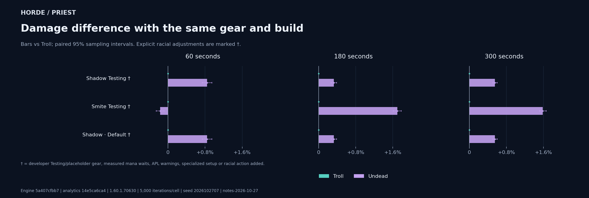
- Shadow Testing: Testing gear Developer loadout is labelled Testing, without a documented common progression tier.
- Smite Testing: Testing gearRacial action added Developer loadout is labelled Testing, without a documented common progression tier. Minimal activation check for RaceTroll. Original developer results are preserved.
- Default: Testing gear Developer loadout is labelled Testing, without a documented common progression tier.
Exact DPS, paired uncertainty, mana waits and pet damage
| Build | Fight | Race | DPS | 95% half-width | vs Troll | Paired half-width | OOM time | Pet DPS | Offensive racial casts | Read Leyline casts |
|---|---|---|---|---|---|---|---|---|---|---|
| Shadow Testing | 60s | Undead | 798.23 | ±1.34 | +0.844% | ±0.105 pp | 0.00s | 0.00 | None | None |
| Shadow Testing | 60s | Troll | 791.54 | ±1.36 | +0.000% | ±0.000 pp | 0.00s | 0.00 | 1 | None |
| Shadow Testing | 180s | Undead | 792.41 | ±0.79 | +0.329% | ±0.060 pp | 0.00s | 0.00 | None | None |
| Shadow Testing | 180s | Troll | 789.81 | ±0.78 | +0.000% | ±0.000 pp | 0.00s | 0.00 | 1 | None |
| Shadow Testing | 300s | Undead | 797.50 | ±0.60 | +0.554% | ±0.048 pp | 0.00s | 0.00 | None | None |
| Shadow Testing | 300s | Troll | 793.10 | ±0.60 | +0.000% | ±0.000 pp | 0.00s | 0.00 | 2 | None |
| Smite Testing | 60s | Troll | 526.57 | ±0.52 | +0.000% | ±0.000 pp | 0.00s | 0.00 | 1 | None |
| Smite Testing | 60s | Undead | 525.70 | ±0.56 | -0.167% | ±0.084 pp | 0.00s | 0.00 | None | None |
| Smite Testing | 180s | Undead | 418.86 | ±0.40 | +1.695% | ±0.087 pp | 0.00s | 0.00 | None | None |
| Smite Testing | 180s | Troll | 411.87 | ±0.38 | +0.000% | ±0.000 pp | 0.00s | 0.00 | 1.0052 | None |
| Smite Testing | 300s | Undead | 383.26 | ±0.29 | +1.585% | ±0.072 pp | 0.00s | 0.00 | None | None |
| Smite Testing | 300s | Troll | 377.28 | ±0.29 | +0.000% | ±0.000 pp | 0.00s | 0.00 | 2 | None |
| Default | 60s | Undead | 798.23 | ±1.34 | +0.844% | ±0.105 pp | 0.00s | 0.00 | None | None |
| Default | 60s | Troll | 791.54 | ±1.36 | +0.000% | ±0.000 pp | 0.00s | 0.00 | 1 | None |
| Default | 180s | Undead | 792.41 | ±0.79 | +0.329% | ±0.060 pp | 0.00s | 0.00 | None | None |
| Default | 180s | Troll | 789.81 | ±0.78 | +0.000% | ±0.000 pp | 0.00s | 0.00 | 1 | None |
| Default | 300s | Undead | 797.50 | ±0.60 | +0.554% | ±0.048 pp | 0.00s | 0.00 | None | None |
| Default | 300s | Troll | 793.10 | ±0.60 | +0.000% | ±0.000 pp | 0.00s | 0.00 | 2 | None |
Horde / Druid
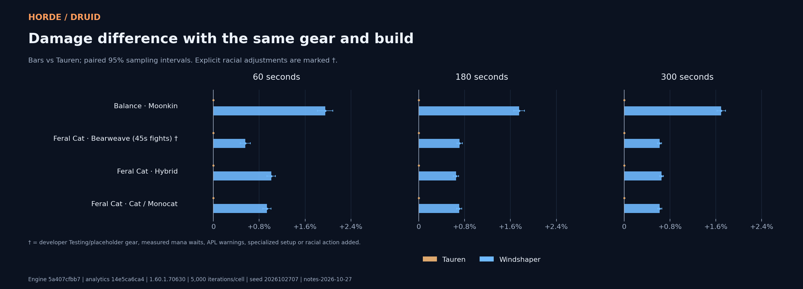
- Bearweave (45s fights): 45s preset Developer rotation is named for 45-second fights; these tests include other durations.
Exact DPS, paired uncertainty, mana waits and pet damage
| Build | Fight | Race | DPS | 95% half-width | vs Tauren | Paired half-width | OOM time | Pet DPS | Offensive racial casts | Read Leyline casts |
|---|---|---|---|---|---|---|---|---|---|---|
| Moonkin | 60s | Windshaper | 707.78 | ±1.62 | +1.951% | ±0.133 pp | 0.00s | 0.00 | None | None |
| Moonkin | 60s | Tauren | 694.23 | ±1.56 | +0.000% | ±0.000 pp | 0.00s | 0.00 | None | None |
| Moonkin | 180s | Windshaper | 710.12 | ±0.91 | +1.751% | ±0.091 pp | 0.00s | 0.00 | None | None |
| Moonkin | 180s | Tauren | 697.90 | ±0.90 | +0.000% | ±0.000 pp | 0.00s | 0.00 | None | None |
| Moonkin | 300s | Windshaper | 711.11 | ±0.71 | +1.693% | ±0.074 pp | 0.00s | 0.00 | None | None |
| Moonkin | 300s | Tauren | 699.26 | ±0.70 | +0.000% | ±0.000 pp | 0.00s | 0.00 | None | None |
| Bearweave (45s fights) | 60s | Windshaper | 867.27 | ±1.12 | +0.555% | ±0.087 pp | 0.00s | 0.00 | None | None |
| Bearweave (45s fights) | 60s | Tauren | 862.48 | ±1.11 | +0.000% | ±0.000 pp | 0.00s | 0.00 | None | None |
| Bearweave (45s fights) | 180s | Windshaper | 804.80 | ±0.61 | +0.714% | ±0.045 pp | 0.02s | 0.00 | None | None |
| Bearweave (45s fights) | 180s | Tauren | 799.09 | ±0.61 | +0.000% | ±0.000 pp | 0.02s | 0.00 | None | None |
| Bearweave (45s fights) | 300s | Windshaper | 800.96 | ±0.47 | +0.618% | ±0.034 pp | 0.03s | 0.00 | None | None |
| Bearweave (45s fights) | 300s | Tauren | 796.04 | ±0.47 | +0.000% | ±0.000 pp | 0.06s | 0.00 | None | None |
| Hybrid | 60s | Windshaper | 855.53 | ±1.06 | +1.011% | ±0.074 pp | 0.00s | 0.00 | None | None |
| Hybrid | 60s | Tauren | 846.97 | ±1.04 | +0.000% | ±0.000 pp | 0.00s | 0.00 | None | None |
| Hybrid | 180s | Windshaper | 792.93 | ±0.62 | +0.650% | ±0.046 pp | 0.00s | 0.00 | None | None |
| Hybrid | 180s | Tauren | 787.82 | ±0.61 | +0.000% | ±0.000 pp | 0.00s | 0.00 | None | None |
| Hybrid | 300s | Windshaper | 786.92 | ±0.45 | +0.651% | ±0.033 pp | 0.02s | 0.00 | None | None |
| Hybrid | 300s | Tauren | 781.83 | ±0.45 | +0.000% | ±0.000 pp | 0.04s | 0.00 | None | None |
| Cat / Monocat | 60s | Windshaper | 867.81 | ±1.07 | +0.935% | ±0.073 pp | 0.00s | 0.00 | None | None |
| Cat / Monocat | 60s | Tauren | 859.77 | ±1.05 | +0.000% | ±0.000 pp | 0.00s | 0.00 | None | None |
| Cat / Monocat | 180s | Windshaper | 804.95 | ±0.61 | +0.708% | ±0.044 pp | 0.00s | 0.00 | None | None |
| Cat / Monocat | 180s | Tauren | 799.29 | ±0.61 | +0.000% | ±0.000 pp | 0.00s | 0.00 | None | None |
| Cat / Monocat | 300s | Windshaper | 801.15 | ±0.47 | +0.622% | ±0.034 pp | 0.02s | 0.00 | None | None |
| Cat / Monocat | 300s | Tauren | 796.19 | ±0.47 | +0.000% | ±0.000 pp | 0.04s | 0.00 | None | None |
Horde / Shaman
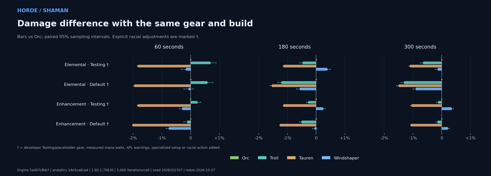
- Testing: Testing gearMana-limited Developer loadout is labelled Testing, without a documented common progression tier. Mean recorded out-of-mana time exceeds 5% of fight length in at least one cell.
- Default: Testing gearMana-limited Developer loadout is labelled Testing, without a documented common progression tier. Mean recorded out-of-mana time exceeds 5% of fight length in at least one cell.
- Testing: Testing gearMana-limited Developer loadout is labelled Testing, without a documented common progression tier. Mean recorded out-of-mana time exceeds 5% of fight length in at least one cell.
- Default: Testing gear Developer loadout is labelled Testing, without a documented common progression tier.
Exact DPS, paired uncertainty, mana waits and pet damage
| Build | Fight | Race | DPS | 95% half-width | vs Orc | Paired half-width | OOM time | Pet DPS | Offensive racial casts | Read Leyline casts |
|---|---|---|---|---|---|---|---|---|---|---|
| Testing | 60s | Troll | 623.63 | ±1.34 | +0.684% | ±0.202 pp | 0.00s | 0.00 | 1 | None |
| Testing | 60s | Orc | 619.39 | ±1.36 | +0.000% | ±0.000 pp | 0.00s | 0.00 | 1 | None |
| Testing | 60s | Windshaper | 618.42 | ±1.34 | -0.157% | ±0.166 pp | 0.00s | 0.00 | None | None |
| Testing | 60s | Tauren | 608.05 | ±1.33 | -1.830% | ±0.025 pp | 0.00s | 0.00 | None | None |
| Testing | 180s | Windshaper | 599.18 | ±0.75 | +0.387% | ±0.108 pp | 0.00s | 0.00 | None | None |
| Testing | 180s | Orc | 596.87 | ±0.75 | +0.000% | ±0.000 pp | 0.00s | 0.00 | 2 | None |
| Testing | 180s | Troll | 594.13 | ±0.75 | -0.460% | ±0.116 pp | 0.00s | 0.00 | 1 | None |
| Testing | 180s | Tauren | 590.12 | ±0.74 | -1.132% | ±0.025 pp | 0.00s | 0.00 | None | None |
| Testing | 300s | Orc | 584.35 | ±0.66 | +0.000% | ±0.000 pp | 12.94s | 0.00 | 3 | None |
| Testing | 300s | Windshaper | 583.57 | ±0.69 | -0.134% | ±0.093 pp | 17.41s | 0.00 | None | None |
| Testing | 300s | Troll | 580.59 | ±0.68 | -0.644% | ±0.099 pp | 16.89s | 0.00 | 2 | None |
| Testing | 300s | Tauren | 577.90 | ±0.66 | -1.103% | ±0.041 pp | 13.82s | 0.00 | None | None |
| Default | 60s | Troll | 594.47 | ±1.26 | +0.577% | ±0.198 pp | 0.00s | 0.00 | 1 | None |
| Default | 60s | Orc | 591.06 | ±1.28 | +0.000% | ±0.000 pp | 0.00s | 0.00 | 1 | None |
| Default | 60s | Windshaper | 590.66 | ±1.28 | -0.067% | ±0.164 pp | 0.00s | 0.00 | None | None |
| Default | 60s | Tauren | 579.54 | ±1.25 | -1.949% | ±0.027 pp | 0.00s | 0.00 | None | None |
| Default | 180s | Orc | 515.12 | ±0.87 | +0.000% | ±0.000 pp | 27.66s | 0.00 | 2 | None |
| Default | 180s | Windshaper | 512.21 | ±0.88 | -0.565% | ±0.121 pp | 30.79s | 0.00 | None | None |
| Default | 180s | Troll | 508.93 | ±0.87 | -1.201% | ±0.135 pp | 30.89s | 0.00 | 1 | None |
| Default | 180s | Tauren | 507.20 | ±0.86 | -1.536% | ±0.066 pp | 28.71s | 0.00 | None | None |
| Default | 300s | Orc | 449.17 | ±0.67 | +0.000% | ±0.000 pp | 109.65s | 0.00 | 3 | None |
| Default | 300s | Windshaper | 445.15 | ±0.69 | -0.894% | ±0.105 pp | 114.30s | 0.00 | None | None |
| Default | 300s | Troll | 443.28 | ±0.68 | -1.311% | ±0.112 pp | 113.88s | 0.00 | 2 | None |
| Default | 300s | Tauren | 442.44 | ±0.67 | -1.498% | ±0.071 pp | 110.85s | 0.00 | None | None |
| Testing | 60s | Troll | 855.17 | ±1.61 | +0.230% | ±0.128 pp | 0.00s | 0.00 | 1 | None |
| Testing | 60s | Orc | 853.21 | ±1.61 | +0.000% | ±0.000 pp | 0.00s | 0.00 | 1 | None |
| Testing | 60s | Windshaper | 850.79 | ±1.61 | -0.284% | ±0.106 pp | 0.00s | 0.00 | None | None |
| Testing | 60s | Tauren | 837.61 | ±1.58 | -1.829% | ±0.024 pp | 0.00s | 0.00 | None | None |
| Testing | 180s | Windshaper | 779.12 | ±0.92 | +0.239% | ±0.076 pp | 0.01s | 0.00 | None | None |
| Testing | 180s | Orc | 777.26 | ±0.91 | +0.000% | ±0.000 pp | 0.00s | 0.00 | 2 | None |
| Testing | 180s | Troll | 775.18 | ±0.91 | -0.267% | ±0.079 pp | 0.01s | 0.00 | 1 | None |
| Testing | 180s | Tauren | 768.44 | ±0.90 | -1.134% | ±0.018 pp | 0.01s | 0.00 | None | None |
| Testing | 300s | Windshaper | 760.40 | ±0.76 | +0.340% | ±0.066 pp | 19.96s | 0.00 | None | None |
| Testing | 300s | Orc | 757.83 | ±0.75 | +0.000% | ±0.000 pp | 19.51s | 0.00 | 3 | None |
| Testing | 300s | Troll | 756.89 | ±0.75 | -0.123% | ±0.067 pp | 20.10s | 0.00 | 2 | None |
| Testing | 300s | Tauren | 749.85 | ±0.74 | -1.052% | ±0.029 pp | 20.27s | 0.00 | None | None |
| Default | 60s | Orc | 790.56 | ±1.47 | +0.000% | ±0.000 pp | 0.00s | 0.00 | 1 | None |
| Default | 60s | Troll | 789.68 | ±1.45 | -0.112% | ±0.122 pp | 0.00s | 0.00 | 1 | None |
| Default | 60s | Windshaper | 784.61 | ±1.43 | -0.752% | ±0.100 pp | 0.00s | 0.00 | None | None |
| Default | 60s | Tauren | 774.68 | ±1.44 | -2.008% | ±0.017 pp | 0.00s | 0.00 | None | None |
| Default | 180s | Orc | 695.65 | ±0.75 | +0.000% | ±0.000 pp | 0.00s | 0.00 | 2 | None |
| Default | 180s | Windshaper | 695.30 | ±0.75 | -0.049% | ±0.075 pp | 0.00s | 0.00 | None | None |
| Default | 180s | Troll | 692.12 | ±0.74 | -0.506% | ±0.078 pp | 0.00s | 0.00 | 1 | None |
| Default | 180s | Tauren | 686.92 | ±0.74 | -1.254% | ±0.017 pp | 0.00s | 0.00 | None | None |
| Default | 300s | Windshaper | 698.16 | ±0.60 | +0.203% | ±0.061 pp | 1.73s | 0.00 | None | None |
| Default | 300s | Orc | 696.75 | ±0.60 | +0.000% | ±0.000 pp | 1.72s | 0.00 | 3 | None |
| Default | 300s | Troll | 695.78 | ±0.59 | -0.139% | ±0.064 pp | 1.77s | 0.00 | 2 | None |
| Default | 300s | Tauren | 689.31 | ±0.59 | -1.067% | ±0.019 pp | 1.89s | 0.00 | None | None |
Horde / Paladin
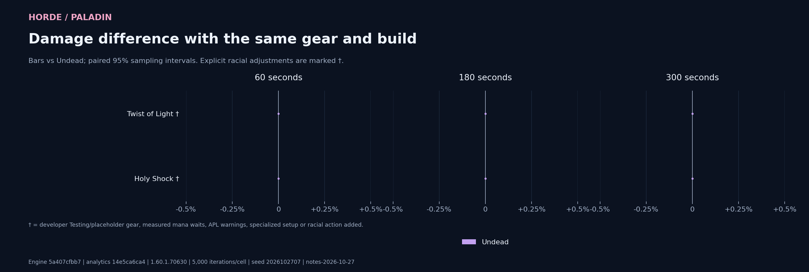
- Twist of Light: Placeholder Developer gear description calls this a placeholder.
- Holy Shock: Placeholder Developer gear description calls this a placeholder.
Exact DPS, paired uncertainty, mana waits and pet damage
| Build | Fight | Race | DPS | 95% half-width | vs Undead | Paired half-width | OOM time | Pet DPS | Offensive racial casts | Read Leyline casts |
|---|---|---|---|---|---|---|---|---|---|---|
| Twist of Light | 60s | Undead | 848.57 | ±2.21 | +0.000% | ±0.000 pp | 0.00s | 0.00 | None | None |
| Twist of Light | 180s | Undead | 844.11 | ±1.26 | +0.000% | ±0.000 pp | 0.00s | 0.00 | None | None |
| Twist of Light | 300s | Undead | 846.65 | ±0.98 | +0.000% | ±0.000 pp | 0.00s | 0.00 | None | None |
| Holy Shock | 60s | Undead | 849.39 | ±1.37 | +0.000% | ±0.000 pp | 0.00s | 0.00 | None | None |
| Holy Shock | 180s | Undead | 821.28 | ±0.78 | +0.000% | ±0.000 pp | 0.00s | 0.00 | None | None |
| Holy Shock | 300s | Undead | 815.73 | ±0.60 | +0.000% | ±0.000 pp | 0.00s | 0.00 | None | None |
Alliance
Each row compares legal races with identical equipment, talents and effective rotation. A close result names the two leading primary races. Exact-input aliases are hidden.
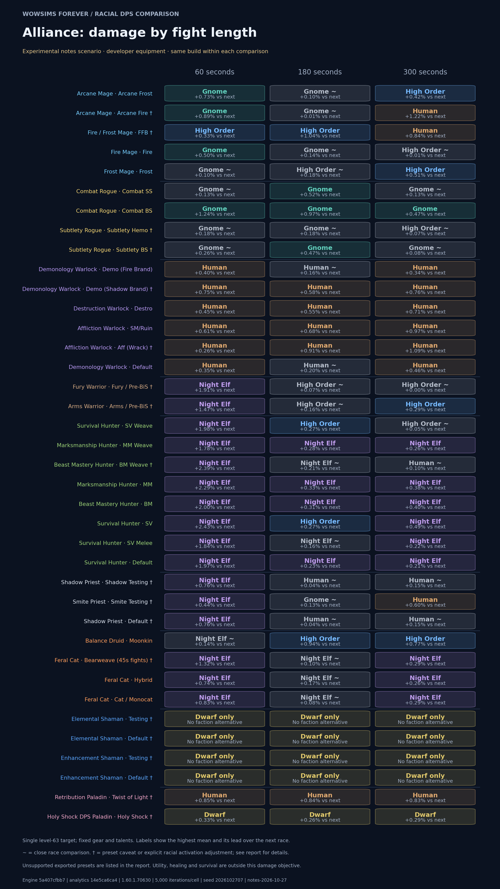
| Developer preset | 60 seconds | 180 seconds | 300 seconds | Preset caveats |
|---|---|---|---|---|
| Mage | ||||
| Arcane FrostArcane Mage · Developer P1 | GnomePrimary mean: 806.85 DPS · +0.734% vs next · ±0.097 pp | Gnome ≈ High OrderPrimary mean: 697.76 DPS · +0.099% vs next · ±0.092 ppPair confirmation: Gnome +0.139% ±0.045 pp · 20,000/race | High OrderPrimary mean: 692.47 DPS · +0.418% vs next · ±0.076 pp | |
| Arcane FireArcane Mage · Developer P1 | GnomePrimary mean: 909.27 DPS · +0.892% vs next · ±0.117 pp | Gnome ≈ HumanPrimary mean: 781.15 DPS · +0.012% vs next · ±0.089 ppPair confirmation: Gnome +0.004% ±0.045 pp · 20,000/race | HumanPrimary mean: 723.13 DPS · +1.215% vs next · ±0.107 pp | Mana-limited |
| FFBFire / Frost Mage · Developer P1 | High OrderPrimary mean: 805.98 DPS · +0.334% vs next · ±0.154 pp | High OrderPrimary mean: 781.90 DPS · +1.041% vs next · ±0.138 pp | HumanPrimary mean: 696.09 DPS · +0.841% vs next · ±0.133 pp | Mana-limited |
| FireFire Mage · Developer P1 | GnomePrimary mean: 858.04 DPS · +0.496% vs next · ±0.153 pp | Gnome ≈ High OrderPrimary mean: 821.95 DPS · +0.141% vs next · ±0.144 ppPair confirmation: Gnome +0.056% ±0.074 pp · 20,000/race | High Order ≈ HumanPrimary mean: 814.93 DPS · +0.012% vs next · ±0.127 ppPair confirmation: Human +0.021% ±0.064 pp · 20,000/race | |
| FrostFrost Mage · Developer P1 | Gnome ≈ High OrderPrimary mean: 630.08 DPS · +0.100% vs next · ±0.051 ppPair confirmation: Gnome +0.106% ±0.026 pp · 20,000/race | High Order ≈ GnomePrimary mean: 604.93 DPS · +0.178% vs next · ±0.072 ppPair confirmation: High Order +0.220% ±0.035 pp · 20,000/race | High OrderPrimary mean: 594.83 DPS · +0.514% vs next · ±0.068 pp | |
| Rogue | ||||
| Combat SSCombat Rogue · Developer P1 | Gnome ≈ Night ElfPrimary mean: 819.87 DPS · +0.129% vs next · ±0.138 ppPair confirmation: Gnome +0.154% ±0.070 pp · 20,000/race | GnomePrimary mean: 706.62 DPS · +0.518% vs next · ±0.082 pp | Gnome ≈ Night ElfPrimary mean: 685.57 DPS · +0.134% vs next · ±0.064 ppPair confirmation: Gnome +0.079% ±0.032 pp · 20,000/race | |
| Combat BSCombat Rogue · Developer P1 | GnomePrimary mean: 825.21 DPS · +1.241% vs next · ±0.127 pp | GnomePrimary mean: 706.18 DPS · +0.968% vs next · ±0.070 pp | GnomePrimary mean: 683.86 DPS · +0.465% vs next · ±0.053 pp | |
| Subtlety HemoSubtlety Rogue · Developer P1 | Gnome ≈ Night ElfPrimary mean: 755.34 DPS · +0.179% vs next · ±0.145 ppPair confirmation: Gnome +0.266% ±0.073 pp · 20,000/race | Gnome ≈ High OrderPrimary mean: 669.29 DPS · +0.183% vs next · ±0.088 ppPair confirmation: Gnome +0.160% ±0.044 pp · 20,000/race | High Order ≈ GnomePrimary mean: 656.43 DPS · +0.066% vs next · ±0.069 ppPair confirmation: High Order +0.085% ±0.035 pp · 20,000/race | Unresolved condition |
| Subtlety BSSubtlety Rogue · Developer P1 | Gnome ≈ Night ElfPrimary mean: 732.92 DPS · +0.260% vs next · ±0.138 ppPair confirmation: Gnome +0.139% ±0.069 pp · 20,000/race | GnomePrimary mean: 650.32 DPS · +0.466% vs next · ±0.081 pp | Gnome ≈ Night ElfPrimary mean: 636.19 DPS · +0.077% vs next · ±0.064 ppPair confirmation: Gnome +0.034% ±0.032 pp · 20,000/race | Unresolved condition |
| Warlock | ||||
| Demo (Fire Brand)Demonology Warlock · Developer pre-raid | HumanPrimary mean: 754.01 DPS · +0.397% vs next · ±0.027 pp | Human ≈ GnomePrimary mean: 752.05 DPS · +0.158% vs next · ±0.072 ppPair confirmation: Human +0.153% ±0.037 pp · 20,000/race | HumanPrimary mean: 744.69 DPS · +0.337% vs next · ±0.067 pp | |
| Demo (Shadow Brand)Demonology Warlock · Developer pre-raid | HumanPrimary mean: 744.72 DPS · +0.755% vs next · ±0.048 pp | HumanPrimary mean: 732.46 DPS · +0.575% vs next · ±0.110 pp | HumanPrimary mean: 725.25 DPS · +0.760% vs next · ±0.100 pp | Rotation caveat |
| DestroDestruction Warlock · Developer pre-raid | HumanPrimary mean: 693.28 DPS · +0.454% vs next · ±0.033 pp | HumanPrimary mean: 666.10 DPS · +0.554% vs next · ±0.065 pp | HumanPrimary mean: 664.52 DPS · +0.710% vs next · ±0.063 pp | |
| SM/RuinAffliction Warlock · Developer pre-raid | HumanPrimary mean: 660.77 DPS · +0.614% vs next · ±0.218 pp | HumanPrimary mean: 649.78 DPS · +0.682% vs next · ±0.158 pp | HumanPrimary mean: 646.71 DPS · +0.966% vs next · ±0.127 pp | |
| Aff (Wrack)Affliction Warlock · Developer pre-raid | HumanPrimary mean: 584.45 DPS · +0.257% vs next · ±0.076 ppPair confirmation: Human +0.261% ±0.038 pp · 20,000/race | HumanPrimary mean: 534.71 DPS · +0.910% vs next · ±0.102 pp | HumanPrimary mean: 531.31 DPS · +1.090% vs next · ±0.088 pp | Mana-limited |
| DefaultDemonology Warlock · Developer pre-raid | HumanPrimary mean: 729.36 DPS · +0.349% vs next · ±0.026 pp | Human ≈ GnomePrimary mean: 703.21 DPS · +0.198% vs next · ±0.079 ppPair confirmation: Human +0.224% ±0.040 pp · 20,000/race | HumanPrimary mean: 697.94 DPS · +0.461% vs next · ±0.069 pp | |
| Warrior | ||||
| Fury / Pre-BiSFury Warrior · Developer pre-raid | Night ElfPrimary mean: 940.44 DPS · +1.915% vs next · ±0.212 pp | High Order ≈ Night ElfPrimary mean: 867.00 DPS · +0.067% vs next · ±0.132 ppPair confirmation: High Order +0.190% ±0.067 pp · 20,000/race | High Order ≈ Night ElfPrimary mean: 865.94 DPS · +0.004% vs next · ±0.103 ppPair confirmation: Night Elf +0.010% ±0.052 pp · 20,000/race | Unresolved condition |
| Arms / Pre-BiSArms Warrior · Developer pre-raid | Night ElfPrimary mean: 805.37 DPS · +1.469% vs next · ±0.074 pp | High Order ≈ HumanPrimary mean: 760.38 DPS · +0.160% vs next · ±0.122 ppPair confirmation: High Order +0.170% ±0.061 pp · 20,000/race | High OrderPrimary mean: 749.04 DPS · +0.291% vs next · ±0.095 ppPair confirmation: High Order +0.328% ±0.048 pp · 20,000/race | Unresolved condition |
| Hunter | ||||
| SV WeaveSurvival Hunter · Developer P1 | Night ElfPrimary mean: 1099.27 DPS · +1.984% vs next · ±0.128 pp | High OrderPrimary mean: 1069.38 DPS · +0.274% vs next · ±0.074 ppPair confirmation: High Order +0.306% ±0.037 pp · 20,000/race | High Order ≈ Night ElfPrimary mean: 1066.27 DPS · +0.051% vs next · ±0.057 ppPair confirmation: High Order +0.099% ±0.029 pp · 20,000/race | |
| MM WeaveMarksmanship Hunter · Developer P1 | Night ElfPrimary mean: 1047.82 DPS · +1.780% vs next · ±0.083 pp | Night ElfPrimary mean: 1004.53 DPS · +0.284% vs next · ±0.047 ppPair confirmation: Night Elf +0.304% ±0.023 pp · 20,000/race | Night ElfPrimary mean: 1007.08 DPS · +0.265% vs next · ±0.038 ppPair confirmation: Night Elf +0.272% ±0.019 pp · 20,000/race | |
| BM WeaveBeast Mastery Hunter · Developer P1 | Night ElfPrimary mean: 1050.15 DPS · +2.387% vs next · ±0.094 pp | Night Elf ≈ HumanPrimary mean: 993.45 DPS · +0.215% vs next · ±0.058 ppPair confirmation: Night Elf +0.191% ±0.029 pp · 20,000/race | Human ≈ Night ElfPrimary mean: 970.08 DPS · +0.096% vs next · ±0.053 ppPair confirmation: Human +0.098% ±0.026 pp · 20,000/race | Mana-limitedMana racial unused |
| MMMarksmanship Hunter · Developer P1 | Night ElfPrimary mean: 802.21 DPS · +2.290% vs next · ±0.077 pp | Night ElfPrimary mean: 763.75 DPS · +0.325% vs next · ±0.042 pp | Night ElfPrimary mean: 768.16 DPS · +0.375% vs next · ±0.037 pp | |
| BMBeast Mastery Hunter · Developer P1 | Night ElfPrimary mean: 886.00 DPS · +2.000% vs next · ±0.044 pp | Night ElfPrimary mean: 838.92 DPS · +0.311% vs next · ±0.047 pp | Night ElfPrimary mean: 832.25 DPS · +0.398% vs next · ±0.023 pp | |
| SVSurvival Hunter · Developer P1 | Night ElfPrimary mean: 718.64 DPS · +2.426% vs next · ±0.062 pp | High OrderPrimary mean: 678.24 DPS · +0.273% vs next · ±0.039 ppPair confirmation: High Order +0.249% ±0.020 pp · 20,000/race | Night ElfPrimary mean: 672.65 DPS · +0.494% vs next · ±0.033 pp | |
| SV MeleeSurvival Hunter · Developer P1 | Night ElfPrimary mean: 837.71 DPS · +1.842% vs next · ±0.124 pp | Night Elf ≈ High OrderPrimary mean: 779.98 DPS · +0.157% vs next · ±0.074 ppPair confirmation: Night Elf +0.161% ±0.037 pp · 20,000/race | Night ElfPrimary mean: 772.11 DPS · +0.221% vs next · ±0.058 ppPair confirmation: Night Elf +0.233% ±0.029 pp · 20,000/race | |
| DefaultSurvival Hunter · Developer P1 | Night ElfPrimary mean: 1101.39 DPS · +1.967% vs next · ±0.073 pp | Night ElfPrimary mean: 1066.81 DPS · +0.231% vs next · ±0.070 ppPair confirmation: Night Elf +0.258% ±0.035 pp · 20,000/race | Night ElfPrimary mean: 1065.96 DPS · +0.210% vs next · ±0.056 ppPair confirmation: Night Elf +0.210% ±0.028 pp · 20,000/race | |
| Priest | ||||
| Shadow TestingShadow Priest · Developer testing | Night ElfPrimary mean: 803.55 DPS · +0.763% vs next · ±0.045 pp | Human ≈ DwarfPrimary mean: 792.45 DPS · +0.041% vs next · ±0.042 ppPair confirmation: Human +0.076% ±0.020 pp · 20,000/race | Human ≈ DwarfPrimary mean: 798.48 DPS · +0.146% vs next · ±0.035 ppPair confirmation: Human +0.179% ±0.017 pp · 20,000/race | Testing gear |
| Smite TestingSmite Priest · Developer testing | Night ElfPrimary mean: 524.10 DPS · +0.445% vs next · ±0.031 pp | Gnome ≈ HumanPrimary mean: 419.15 DPS · +0.130% vs next · ±0.049 ppPair confirmation: Gnome +0.132% ±0.025 pp · 20,000/race | HumanPrimary mean: 383.02 DPS · +0.598% vs next · ±0.046 pp | Testing gearRacial action added |
| DefaultShadow Priest · Developer testing | Night ElfPrimary mean: 803.55 DPS · +0.763% vs next · ±0.045 pp | Human ≈ DwarfPrimary mean: 792.45 DPS · +0.041% vs next · ±0.042 ppPair confirmation: Human +0.076% ±0.020 pp · 20,000/race | Human ≈ DwarfPrimary mean: 798.48 DPS · +0.146% vs next · ±0.035 ppPair confirmation: Human +0.179% ±0.017 pp · 20,000/race | Testing gear |
| Druid | ||||
| MoonkinBalance Druid · Developer pre-raid | Night Elf ≈ High OrderPrimary mean: 708.80 DPS · +0.145% vs next · ±0.134 ppPair confirmation: Night Elf +0.271% ±0.066 pp · 20,000/race | High OrderPrimary mean: 710.12 DPS · +0.942% vs next · ±0.090 pp | High OrderPrimary mean: 711.11 DPS · +0.774% vs next · ±0.073 pp | |
| Bearweave (45s fights)Feral Cat · Developer pre-raid | Night ElfPrimary mean: 878.71 DPS · +1.320% vs next · ±0.091 pp | Night Elf ≈ High OrderPrimary mean: 805.61 DPS · +0.100% vs next · ±0.045 ppPair confirmation: Night Elf +0.032% ±0.023 pp · 20,000/race | Night ElfPrimary mean: 803.31 DPS · +0.293% vs next · ±0.035 ppPair confirmation: Night Elf +0.246% ±0.017 pp · 20,000/race | 45s preset |
| HybridFeral Cat · Developer pre-raid | Night ElfPrimary mean: 861.90 DPS · +0.744% vs next · ±0.077 pp | Night Elf ≈ High OrderPrimary mean: 794.26 DPS · +0.167% vs next · ±0.046 ppPair confirmation: Night Elf +0.153% ±0.023 pp · 20,000/race | Night ElfPrimary mean: 788.93 DPS · +0.256% vs next · ±0.034 ppPair confirmation: Night Elf +0.233% ±0.017 pp · 20,000/race | |
| Cat / MonocatFeral Cat · Developer pre-raid | Night ElfPrimary mean: 875.04 DPS · +0.833% vs next · ±0.076 pp | Night Elf ≈ High OrderPrimary mean: 805.61 DPS · +0.082% vs next · ±0.044 ppPair confirmation: Night Elf +0.045% ±0.022 pp · 20,000/race | Night ElfPrimary mean: 803.49 DPS · +0.292% vs next · ±0.034 ppPair confirmation: Night Elf +0.240% ±0.017 pp · 20,000/race | |
| Shaman | ||||
| TestingElemental Shaman · Developer testing | Dwarf onlyNo faction alternative | Dwarf onlyNo faction alternative | Dwarf onlyNo faction alternative | Testing gear |
| DefaultElemental Shaman · Developer testing | Dwarf onlyNo faction alternative | Dwarf onlyNo faction alternative | Dwarf onlyNo faction alternative | Testing gearMana-limited |
| TestingEnhancement Shaman · Developer testing | Dwarf onlyNo faction alternative | Dwarf onlyNo faction alternative | Dwarf onlyNo faction alternative | Testing gearMana-limited |
| DefaultEnhancement Shaman · Developer testing | Dwarf onlyNo faction alternative | Dwarf onlyNo faction alternative | Dwarf onlyNo faction alternative | Testing gear |
| Paladin | ||||
| Twist of LightRetribution Paladin · Pre-raid placeholder | HumanPrimary mean: 846.76 DPS · +0.846% vs next · ±0.033 pp | HumanPrimary mean: 842.24 DPS · +0.840% vs next · ±0.019 pp | HumanPrimary mean: 844.73 DPS · +0.826% vs next · ±0.015 pp | Placeholder |
| Holy ShockHoly Shock DPS Paladin · Pre-raid placeholder | DwarfPrimary mean: 848.86 DPS · +0.332% vs next · ±0.066 pp | DwarfPrimary mean: 819.53 DPS · +0.263% vs next · ±0.048 ppPair confirmation: Dwarf +0.229% ±0.024 pp · 20,000/race | DwarfPrimary mean: 814.38 DPS · +0.288% vs next · ±0.040 ppPair confirmation: Dwarf +0.261% ±0.020 pp · 20,000/race | Placeholder |
Alliance: racial activation checks
The untouched developer APL left an offensive racial unused at every duration. The adjusted comparison prepends spell-is-known guarded casts for only those missing racial IDs, identically for every race. Equipment and all original priority entries remain fixed. No other cooldown actions are inserted; their scheduling rules remain unchanged. This is a controlled adjustment, not a claim of an optimal racial rotation. Unaffected races must reproduce every original damage iteration.
Original versus adjusted DPS and racial casts per iteration
| Build | Fight | Race | Original DPS | Adjusted DPS | Change | Racial casts |
|---|---|---|---|---|---|---|
| Smite Testing | 60s | Night Elf | 518.28 | 524.10 | +1.123% | 0.000 → 1.000 |
| Smite Testing | 60s | Gnome | 518.47 | 521.78 | +0.639% | 0.000 → 1.000 |
| Smite Testing | 60s | Human | 520.66 | 520.66 | +0.000% | 0.000 → 0.000 |
| Smite Testing | 60s | Dwarf | 519.00 | 519.00 | +0.000% | 0.000 → 0.000 |
| Smite Testing | 180s | Gnome | 416.35 | 419.15 | +0.673% | 0.000 → 2.000 |
| Smite Testing | 180s | Human | 418.61 | 418.61 | +0.000% | 0.000 → 0.000 |
| Smite Testing | 180s | Night Elf | 411.04 | 412.98 | +0.472% | 0.000 → 1.319 |
| Smite Testing | 180s | Dwarf | 411.62 | 411.62 | +0.000% | 0.000 → 0.000 |
| Smite Testing | 300s | Human | 383.02 | 383.02 | +0.000% | 0.000 → 0.000 |
| Smite Testing | 300s | Gnome | 378.52 | 380.74 | +0.587% | 0.000 → 3.000 |
| Smite Testing | 300s | Night Elf | 375.34 | 377.16 | +0.486% | 0.000 → 2.000 |
| Smite Testing | 300s | Dwarf | 376.08 | 376.08 | +0.000% | 0.000 → 0.000 |
Alliance: enemy-type sensitivity
Only enemy type changes, using the same effective rotation. These results apply at 180 seconds.
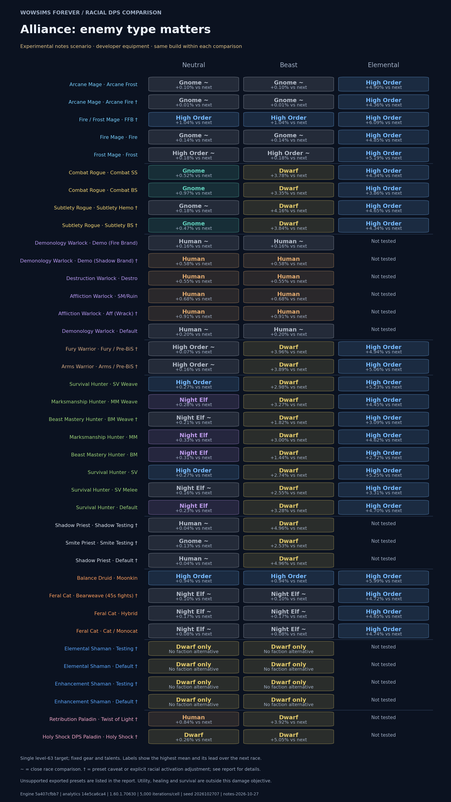
Alliance / Mage
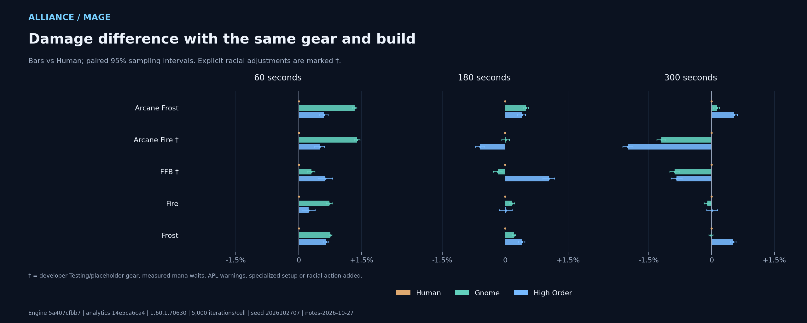
- Arcane Fire: Mana-limited Mean recorded out-of-mana time exceeds 5% of fight length in at least one cell.
- FFB: Mana-limited Mean recorded out-of-mana time exceeds 5% of fight length in at least one cell.
Exact DPS, paired uncertainty, mana waits and pet damage
| Build | Fight | Race | DPS | 95% half-width | vs Human | Paired half-width | OOM time | Pet DPS | Offensive racial casts | Read Leyline casts |
|---|---|---|---|---|---|---|---|---|---|---|
| Arcane Frost | 60s | Gnome | 806.85 | ±2.03 | +1.337% | ±0.054 pp | 0.00s | 0.00 | 1 | None |
| Arcane Frost | 60s | High Order | 800.97 | ±2.02 | +0.599% | ±0.102 pp | 0.00s | 0.00 | None | 1 |
| Arcane Frost | 60s | Human | 796.20 | ±2.01 | +0.000% | ±0.000 pp | 0.00s | 0.00 | None | None |
| Arcane Frost | 180s | Gnome | 697.76 | ±1.11 | +0.494% | ±0.064 pp | 0.00s | 0.00 | 2 | None |
| Arcane Frost | 180s | High Order | 697.07 | ±1.14 | +0.394% | ±0.093 pp | 0.01s | 0.00 | None | 1.3262 |
| Arcane Frost | 180s | Human | 694.33 | ±1.09 | +0.000% | ±0.000 pp | 0.00s | 0.00 | None | None |
| Arcane Frost | 300s | High Order | 692.47 | ±0.86 | +0.542% | ±0.080 pp | 0.03s | 0.00 | None | 1.7106 |
| Arcane Frost | 300s | Gnome | 689.59 | ±0.88 | +0.123% | ±0.069 pp | 0.01s | 0.00 | 3 | None |
| Arcane Frost | 300s | Human | 688.74 | ±0.87 | +0.000% | ±0.000 pp | 0.01s | 0.00 | None | None |
| Arcane Fire | 60s | Gnome | 909.27 | ±2.40 | +1.395% | ±0.071 pp | 0.04s | 0.00 | 1 | None |
| Arcane Fire | 60s | High Order | 901.24 | ±2.41 | +0.498% | ±0.124 pp | 0.05s | 0.00 | None | 1 |
| Arcane Fire | 60s | Human | 896.77 | ±2.42 | +0.000% | ±0.000 pp | 0.06s | 0.00 | None | None |
| Arcane Fire | 180s | Gnome | 781.15 | ±1.31 | +0.012% | ±0.089 pp | 5.49s | 0.00 | 2 | None |
| Arcane Fire | 180s | Human | 781.05 | ±1.28 | +0.000% | ±0.000 pp | 4.47s | 0.00 | None | None |
| Arcane Fire | 180s | High Order | 776.41 | ±1.32 | -0.595% | ±0.109 pp | 5.74s | 0.00 | None | 1.8058 |
| Arcane Fire | 300s | Human | 723.13 | ±1.26 | +0.000% | ±0.000 pp | 49.67s | 0.00 | None | None |
| Arcane Fire | 300s | Gnome | 714.45 | ±1.28 | -1.201% | ±0.104 pp | 57.10s | 0.00 | 3 | None |
| Arcane Fire | 300s | High Order | 708.70 | ±1.23 | -1.996% | ±0.121 pp | 56.78s | 0.00 | None | 2.7744 |
| FFB | 60s | High Order | 805.98 | ±2.72 | +0.636% | ±0.171 pp | 0.00s | 0.00 | None | 0 |
| FFB | 60s | Gnome | 803.30 | ±2.74 | +0.301% | ±0.087 pp | 0.00s | 0.00 | 1 | None |
| FFB | 60s | Human | 800.89 | ±2.70 | +0.000% | ±0.000 pp | 0.00s | 0.00 | None | None |
| FFB | 180s | High Order | 781.90 | ±1.61 | +1.041% | ±0.138 pp | 0.00s | 0.00 | None | 1 |
| FFB | 180s | Human | 773.85 | ±1.58 | +0.000% | ±0.000 pp | 0.00s | 0.00 | None | None |
| FFB | 180s | Gnome | 772.48 | ±1.59 | -0.176% | ±0.107 pp | 0.00s | 0.00 | 2 | None |
| FFB | 300s | Human | 696.09 | ±1.23 | +0.000% | ±0.000 pp | 54.80s | 0.00 | None | None |
| FFB | 300s | High Order | 690.28 | ±1.24 | -0.834% | ±0.131 pp | 59.33s | 0.00 | None | 2 |
| FFB | 300s | Gnome | 689.94 | ±1.24 | -0.883% | ±0.113 pp | 56.15s | 0.00 | 3 | None |
| Fire | 60s | Gnome | 858.04 | ±2.25 | +0.734% | ±0.068 pp | 0.00s | 0.00 | 1 | None |
| Fire | 60s | High Order | 853.80 | ±2.22 | +0.237% | ±0.160 pp | 0.00s | 0.00 | None | 0 |
| Fire | 60s | Human | 851.79 | ±2.24 | +0.000% | ±0.000 pp | 0.00s | 0.00 | None | None |
| Fire | 180s | Gnome | 821.95 | ±1.40 | +0.161% | ±0.062 pp | 0.00s | 0.00 | 2 | None |
| Fire | 180s | High Order | 820.79 | ±1.42 | +0.020% | ±0.147 pp | 0.00s | 0.00 | None | 0.1494 |
| Fire | 180s | Human | 820.63 | ±1.41 | +0.000% | ±0.000 pp | 0.00s | 0.00 | None | None |
| Fire | 300s | High Order | 814.93 | ±1.09 | +0.012% | ±0.127 pp | 0.00s | 0.00 | None | 0.8864 |
| Fire | 300s | Human | 814.83 | ±1.15 | +0.000% | ±0.000 pp | 0.00s | 0.00 | None | None |
| Fire | 300s | Gnome | 813.99 | ±1.15 | -0.102% | ±0.075 pp | 0.00s | 0.00 | 3 | None |
| Frost | 60s | Gnome | 630.08 | ±1.57 | +0.759% | ±0.035 pp | 0.00s | 0.00 | 1 | None |
| Frost | 60s | High Order | 629.45 | ±1.55 | +0.658% | ±0.060 pp | 0.00s | 0.00 | None | 0 |
| Frost | 60s | Human | 625.33 | ±1.55 | +0.000% | ±0.000 pp | 0.00s | 0.00 | None | None |
| Frost | 180s | High Order | 604.93 | ±0.98 | +0.392% | ±0.075 pp | 0.22s | 0.00 | None | 0.1614 |
| Frost | 180s | Gnome | 603.85 | ±0.93 | +0.214% | ±0.036 pp | 0.07s | 0.00 | 2 | None |
| Frost | 180s | Human | 602.57 | ±0.92 | +0.000% | ±0.000 pp | 0.08s | 0.00 | None | None |
| Frost | 300s | High Order | 594.83 | ±0.69 | +0.514% | ±0.068 pp | 0.87s | 0.00 | None | 0.4988 |
| Frost | 300s | Human | 591.79 | ±0.72 | +0.000% | ±0.000 pp | 0.53s | 0.00 | None | None |
| Frost | 300s | Gnome | 591.71 | ±0.70 | -0.014% | ±0.048 pp | 0.49s | 0.00 | 3 | None |
Alliance / Rogue
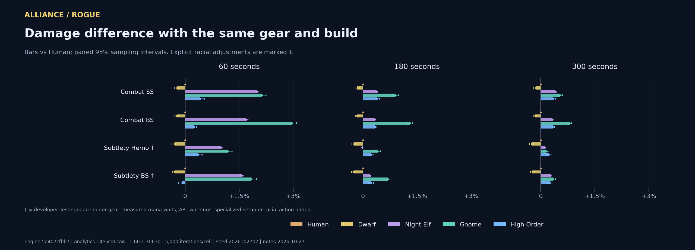
- Subtlety Hemo: Unresolved condition An APL condition is unresolved. See the exact validation dump.
- Subtlety BS: Unresolved condition An APL condition is unresolved. See the exact validation dump.
Exact DPS, paired uncertainty, mana waits and pet damage
| Build | Fight | Race | DPS | 95% half-width | vs Human | Paired half-width | OOM time | Pet DPS | Offensive racial casts | Read Leyline casts |
|---|---|---|---|---|---|---|---|---|---|---|
| Combat SS | 60s | Gnome | 819.87 | ±1.61 | +2.130% | ±0.138 pp | 0.00s | 0.00 | 1 | None |
| Combat SS | 60s | Night Elf | 818.81 | ±1.62 | +1.998% | ±0.052 pp | 0.00s | 0.00 | 1 | None |
| Combat SS | 60s | High Order | 806.16 | ±1.60 | +0.421% | ±0.116 pp | 0.00s | 0.00 | None | 0 |
| Combat SS | 60s | Human | 802.77 | ±1.59 | +0.000% | ±0.000 pp | 0.00s | 0.00 | None | None |
| Combat SS | 60s | Dwarf | 800.95 | ±1.58 | -0.228% | ±0.069 pp | 0.00s | 0.00 | None | None |
| Combat SS | 180s | Gnome | 706.62 | ±0.89 | +0.903% | ±0.082 pp | 0.00s | 0.00 | 2 | None |
| Combat SS | 180s | High Order | 702.97 | ±0.89 | +0.383% | ±0.077 pp | 0.00s | 0.00 | None | 0 |
| Combat SS | 180s | Night Elf | 702.94 | ±0.89 | +0.379% | ±0.022 pp | 0.00s | 0.00 | 1 | None |
| Combat SS | 180s | Human | 700.29 | ±0.89 | +0.000% | ±0.000 pp | 0.00s | 0.00 | None | None |
| Combat SS | 180s | Dwarf | 699.22 | ±0.87 | -0.153% | ±0.061 pp | 0.00s | 0.00 | None | None |
| Combat SS | 300s | Gnome | 685.57 | ±0.67 | +0.545% | ±0.065 pp | 0.00s | 0.00 | 3 | None |
| Combat SS | 300s | Night Elf | 684.66 | ±0.68 | +0.410% | ±0.022 pp | 0.00s | 0.00 | 2 | None |
| Combat SS | 300s | High Order | 684.23 | ±0.68 | +0.348% | ±0.062 pp | 0.00s | 0.00 | None | 0 |
| Combat SS | 300s | Human | 681.86 | ±0.68 | +0.000% | ±0.000 pp | 0.00s | 0.00 | None | None |
| Combat SS | 300s | Dwarf | 680.90 | ±0.68 | -0.141% | ±0.054 pp | 0.00s | 0.00 | None | None |
| Combat BS | 60s | Gnome | 825.21 | ±1.44 | +2.956% | ±0.129 pp | 0.00s | 0.00 | 1 | None |
| Combat BS | 60s | Night Elf | 815.09 | ±1.45 | +1.694% | ±0.051 pp | 0.00s | 0.00 | 1 | None |
| Combat BS | 60s | High Order | 803.45 | ±1.43 | +0.241% | ±0.079 pp | 0.00s | 0.00 | None | 0 |
| Combat BS | 60s | Human | 801.51 | ±1.43 | +0.000% | ±0.000 pp | 0.00s | 0.00 | None | None |
| Combat BS | 60s | Dwarf | 799.64 | ±1.41 | -0.233% | ±0.054 pp | 0.00s | 0.00 | None | None |
| Combat BS | 180s | Gnome | 706.18 | ±0.79 | +1.305% | ±0.069 pp | 0.00s | 0.00 | 2 | None |
| Combat BS | 180s | High Order | 699.41 | ±0.79 | +0.334% | ±0.055 pp | 0.00s | 0.00 | None | 0 |
| Combat BS | 180s | Night Elf | 699.35 | ±0.79 | +0.326% | ±0.021 pp | 0.00s | 0.00 | 1 | None |
| Combat BS | 180s | Human | 697.08 | ±0.78 | +0.000% | ±0.000 pp | 0.00s | 0.00 | None | None |
| Combat BS | 180s | Dwarf | 695.97 | ±0.78 | -0.160% | ±0.044 pp | 0.00s | 0.00 | None | None |
| Combat BS | 300s | Gnome | 683.86 | ±0.60 | +0.804% | ±0.054 pp | 0.00s | 0.00 | 3 | None |
| Combat BS | 300s | High Order | 680.69 | ±0.60 | +0.337% | ±0.046 pp | 0.00s | 0.00 | None | 0 |
| Combat BS | 300s | Night Elf | 680.61 | ±0.60 | +0.326% | ±0.019 pp | 0.00s | 0.00 | 2 | None |
| Combat BS | 300s | Human | 678.41 | ±0.60 | +0.000% | ±0.000 pp | 0.00s | 0.00 | None | None |
| Combat BS | 300s | Dwarf | 677.36 | ±0.60 | -0.154% | ±0.039 pp | 0.00s | 0.00 | None | None |
| Subtlety Hemo | 60s | Gnome | 755.34 | ±1.45 | +1.183% | ±0.144 pp | 0.00s | 0.00 | 1 | None |
| Subtlety Hemo | 60s | Night Elf | 753.98 | ±1.48 | +1.002% | ±0.042 pp | 0.00s | 0.00 | 1 | None |
| Subtlety Hemo | 60s | High Order | 749.16 | ±1.49 | +0.356% | ±0.119 pp | 0.00s | 0.00 | None | 0 |
| Subtlety Hemo | 60s | Human | 746.50 | ±1.46 | +0.000% | ±0.000 pp | 0.00s | 0.00 | None | None |
| Subtlety Hemo | 60s | Dwarf | 744.30 | ±1.45 | -0.295% | ±0.071 pp | 0.00s | 0.00 | None | None |
| Subtlety Hemo | 180s | Gnome | 669.29 | ±0.80 | +0.406% | ±0.087 pp | 0.00s | 0.00 | 2 | None |
| Subtlety Hemo | 180s | High Order | 668.07 | ±0.82 | +0.222% | ±0.085 pp | 0.00s | 0.00 | None | 0 |
| Subtlety Hemo | 180s | Human | 666.59 | ±0.81 | +0.000% | ±0.000 pp | 0.00s | 0.00 | None | None |
| Subtlety Hemo | 180s | Night Elf | 666.47 | ±0.81 | -0.018% | ±0.018 pp | 0.00s | 0.00 | 1 | None |
| Subtlety Hemo | 180s | Dwarf | 664.96 | ±0.80 | -0.244% | ±0.066 pp | 0.00s | 0.00 | None | None |
| Subtlety Hemo | 300s | High Order | 656.43 | ±0.63 | +0.225% | ±0.067 pp | 0.00s | 0.00 | None | 0 |
| Subtlety Hemo | 300s | Gnome | 656.00 | ±0.63 | +0.158% | ±0.070 pp | 0.00s | 0.00 | 3 | None |
| Subtlety Hemo | 300s | Night Elf | 655.79 | ±0.63 | +0.127% | ±0.022 pp | 0.00s | 0.00 | 2 | None |
| Subtlety Hemo | 300s | Human | 654.96 | ±0.62 | +0.000% | ±0.000 pp | 0.00s | 0.00 | None | None |
| Subtlety Hemo | 300s | Dwarf | 653.29 | ±0.62 | -0.255% | ±0.058 pp | 0.00s | 0.00 | None | None |
| Subtlety BS | 60s | Gnome | 732.92 | ±1.34 | +1.837% | ±0.140 pp | 0.00s | 0.00 | 1 | None |
| Subtlety BS | 60s | Night Elf | 731.01 | ±1.33 | +1.573% | ±0.038 pp | 0.00s | 0.00 | 1 | None |
| Subtlety BS | 60s | Human | 719.69 | ±1.32 | +0.000% | ±0.000 pp | 0.00s | 0.00 | None | None |
| Subtlety BS | 60s | High Order | 719.11 | ±1.31 | -0.081% | ±0.105 pp | 0.00s | 0.00 | None | 0 |
| Subtlety BS | 60s | Dwarf | 717.60 | ±1.30 | -0.290% | ±0.060 pp | 0.00s | 0.00 | None | None |
| Subtlety BS | 180s | Gnome | 650.32 | ±0.77 | +0.693% | ±0.083 pp | 0.00s | 0.00 | 2 | None |
| Subtlety BS | 180s | High Order | 647.30 | ±0.76 | +0.226% | ±0.073 pp | 0.00s | 0.00 | None | 0 |
| Subtlety BS | 180s | Night Elf | 647.16 | ±0.77 | +0.203% | ±0.016 pp | 0.00s | 0.00 | 1 | None |
| Subtlety BS | 180s | Human | 645.84 | ±0.77 | +0.000% | ±0.000 pp | 0.00s | 0.00 | None | None |
| Subtlety BS | 180s | Dwarf | 644.19 | ±0.76 | -0.256% | ±0.054 pp | 0.00s | 0.00 | None | None |
| Subtlety BS | 300s | Gnome | 636.19 | ±0.59 | +0.349% | ±0.064 pp | 0.00s | 0.00 | 3 | None |
| Subtlety BS | 300s | Night Elf | 635.71 | ±0.59 | +0.272% | ±0.018 pp | 0.00s | 0.00 | 2 | None |
| Subtlety BS | 300s | High Order | 635.57 | ±0.58 | +0.251% | ±0.060 pp | 0.00s | 0.00 | None | 0 |
| Subtlety BS | 300s | Human | 633.98 | ±0.59 | +0.000% | ±0.000 pp | 0.00s | 0.00 | None | None |
| Subtlety BS | 300s | Dwarf | 632.53 | ±0.58 | -0.230% | ±0.049 pp | 0.00s | 0.00 | None | None |
Alliance / Warlock
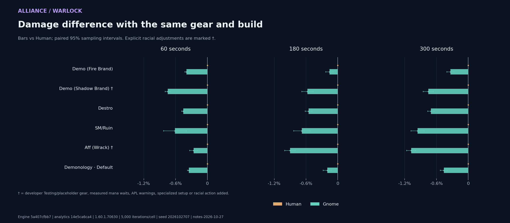
- Demo (Shadow Brand): Rotation caveat Unresolved aura 1323392 removes a condition branch in the developer Shadow Brand rotation.
- Aff (Wrack): Mana-limited Mean recorded out-of-mana time exceeds 5% of fight length in at least one cell.
Exact DPS, paired uncertainty, mana waits and pet damage
| Build | Fight | Race | DPS | 95% half-width | vs Human | Paired half-width | OOM time | Pet DPS | Offensive racial casts | Read Leyline casts |
|---|---|---|---|---|---|---|---|---|---|---|
| Demo (Fire Brand) | 60s | Human | 754.01 | ±1.31 | +0.000% | ±0.000 pp | 0.00s | 148.98 | None | None |
| Demo (Fire Brand) | 60s | Gnome | 751.02 | ±1.29 | -0.395% | ±0.027 pp | 0.00s | 148.32 | 1 | None |
| Demo (Fire Brand) | 180s | Human | 752.05 | ±0.79 | +0.000% | ±0.000 pp | 0.05s | 153.59 | None | None |
| Demo (Fire Brand) | 180s | Gnome | 750.86 | ±0.79 | -0.158% | ±0.072 pp | 0.05s | 152.91 | 2 | None |
| Demo (Fire Brand) | 300s | Human | 744.69 | ±0.62 | +0.000% | ±0.000 pp | 0.08s | 154.89 | None | None |
| Demo (Fire Brand) | 300s | Gnome | 742.19 | ±0.62 | -0.336% | ±0.067 pp | 0.06s | 154.23 | 3 | None |
| Demo (Shadow Brand) | 60s | Human | 744.72 | ±1.80 | +0.000% | ±0.000 pp | 0.00s | 128.34 | None | None |
| Demo (Shadow Brand) | 60s | Gnome | 739.15 | ±1.78 | -0.749% | ±0.048 pp | 0.00s | 127.44 | 1 | None |
| Demo (Shadow Brand) | 180s | Human | 732.46 | ±1.08 | +0.000% | ±0.000 pp | 0.13s | 132.09 | None | None |
| Demo (Shadow Brand) | 180s | Gnome | 728.27 | ±1.06 | -0.572% | ±0.109 pp | 0.11s | 131.15 | 2 | None |
| Demo (Shadow Brand) | 300s | Human | 725.25 | ±0.82 | +0.000% | ±0.000 pp | 0.12s | 133.49 | None | None |
| Demo (Shadow Brand) | 300s | Gnome | 719.77 | ±0.82 | -0.755% | ±0.099 pp | 0.13s | 132.46 | 3 | None |
| Destro | 60s | Human | 693.28 | ±1.28 | +0.000% | ±0.000 pp | 0.00s | 55.75 | None | None |
| Destro | 60s | Gnome | 690.14 | ±1.27 | -0.452% | ±0.032 pp | 0.00s | 55.21 | 1 | None |
| Destro | 180s | Human | 666.10 | ±0.79 | +0.000% | ±0.000 pp | 2.17s | 55.73 | None | None |
| Destro | 180s | Gnome | 662.43 | ±0.78 | -0.551% | ±0.064 pp | 2.19s | 55.17 | 2 | None |
| Destro | 300s | Human | 664.52 | ±0.62 | +0.000% | ±0.000 pp | 1.88s | 55.80 | None | None |
| Destro | 300s | Gnome | 659.83 | ±0.62 | -0.705% | ±0.062 pp | 1.87s | 55.24 | 3 | None |
| SM/Ruin | 60s | Human | 660.77 | ±1.65 | +0.000% | ±0.000 pp | 0.00s | 55.09 | None | None |
| SM/Ruin | 60s | Gnome | 656.74 | ±1.64 | -0.610% | ±0.215 pp | 0.00s | 54.50 | 1 | None |
| SM/Ruin | 180s | Human | 649.78 | ±1.04 | +0.000% | ±0.000 pp | 0.35s | 54.86 | None | None |
| SM/Ruin | 180s | Gnome | 645.38 | ±1.04 | -0.677% | ±0.156 pp | 0.31s | 54.26 | 2 | None |
| SM/Ruin | 300s | Human | 646.71 | ±0.81 | +0.000% | ±0.000 pp | 0.43s | 54.92 | None | None |
| SM/Ruin | 300s | Gnome | 640.52 | ±0.79 | -0.957% | ±0.125 pp | 0.44s | 54.35 | 3 | None |
| Aff (Wrack) | 60s | Human | 584.45 | ±1.19 | +0.000% | ±0.000 pp | 0.88s | 53.83 | None | None |
| Aff (Wrack) | 60s | Gnome | 582.95 | ±1.16 | -0.257% | ±0.076 pp | 0.58s | 53.28 | 1 | None |
| Aff (Wrack) | 180s | Human | 534.71 | ±0.64 | +0.000% | ±0.000 pp | 22.38s | 53.65 | None | None |
| Aff (Wrack) | 180s | Gnome | 529.89 | ±0.63 | -0.902% | ±0.100 pp | 22.97s | 53.11 | 2 | None |
| Aff (Wrack) | 300s | Human | 531.31 | ±0.50 | +0.000% | ±0.000 pp | 43.66s | 53.76 | None | None |
| Aff (Wrack) | 300s | Gnome | 525.58 | ±0.49 | -1.078% | ±0.087 pp | 45.75s | 53.21 | 3 | None |
| Default | 60s | Human | 729.36 | ±1.21 | +0.000% | ±0.000 pp | 0.00s | 144.88 | None | None |
| Default | 60s | Gnome | 726.83 | ±1.20 | -0.348% | ±0.026 pp | 0.00s | 144.28 | 1 | None |
| Default | 180s | Human | 703.21 | ±0.75 | +0.000% | ±0.000 pp | 0.40s | 148.55 | None | None |
| Default | 180s | Gnome | 701.83 | ±0.73 | -0.197% | ±0.079 pp | 0.40s | 147.83 | 2 | None |
| Default | 300s | Human | 697.94 | ±0.57 | +0.000% | ±0.000 pp | 0.48s | 149.79 | None | None |
| Default | 300s | Gnome | 694.74 | ±0.57 | -0.459% | ±0.068 pp | 0.46s | 149.20 | 3 | None |
Alliance / Warrior
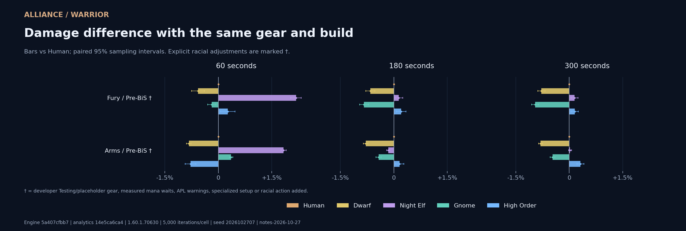
- Fury / Pre-BiS: Unresolved condition An APL condition is unresolved. See the exact validation dump.
- Arms / Pre-BiS: Unresolved condition An APL condition is unresolved. See the exact validation dump.
Exact DPS, paired uncertainty, mana waits and pet damage
| Build | Fight | Race | DPS | 95% half-width | vs Human | Paired half-width | OOM time | Pet DPS | Offensive racial casts | Read Leyline casts |
|---|---|---|---|---|---|---|---|---|---|---|
| Fury / Pre-BiS | 60s | Night Elf | 940.44 | ±2.47 | +2.182% | ±0.144 pp | 0.00s | 0.00 | 1 | None |
| Fury / Pre-BiS | 60s | High Order | 922.78 | ±2.44 | +0.262% | ±0.206 pp | 0.00s | 0.00 | None | 0 |
| Fury / Pre-BiS | 60s | Human | 920.36 | ±2.43 | +0.000% | ±0.000 pp | 0.00s | 0.00 | None | None |
| Fury / Pre-BiS | 60s | Gnome | 918.68 | ±2.41 | -0.183% | ±0.114 pp | 0.00s | 0.00 | 1 | None |
| Fury / Pre-BiS | 60s | Dwarf | 915.15 | ±2.39 | -0.567% | ±0.181 pp | 0.00s | 0.00 | None | None |
| Fury / Pre-BiS | 180s | High Order | 867.00 | ±1.39 | +0.208% | ±0.132 pp | 0.00s | 0.00 | None | 0 |
| Fury / Pre-BiS | 180s | Night Elf | 866.42 | ±1.39 | +0.141% | ±0.112 pp | 0.00s | 0.00 | 1 | None |
| Fury / Pre-BiS | 180s | Human | 865.20 | ±1.39 | +0.000% | ±0.000 pp | 0.00s | 0.00 | None | None |
| Fury / Pre-BiS | 180s | Dwarf | 859.52 | ±1.37 | -0.657% | ±0.129 pp | 0.00s | 0.00 | None | None |
| Fury / Pre-BiS | 180s | Gnome | 857.96 | ±1.35 | -0.837% | ±0.122 pp | 0.00s | 0.00 | 2 | None |
| Fury / Pre-BiS | 300s | High Order | 865.94 | ±1.07 | +0.152% | ±0.102 pp | 0.00s | 0.00 | None | 0 |
| Fury / Pre-BiS | 300s | Night Elf | 865.90 | ±1.09 | +0.148% | ±0.099 pp | 0.00s | 0.00 | 2 | None |
| Fury / Pre-BiS | 300s | Human | 864.62 | ±1.08 | +0.000% | ±0.000 pp | 0.00s | 0.00 | None | None |
| Fury / Pre-BiS | 300s | Dwarf | 857.85 | ±1.07 | -0.784% | ±0.101 pp | 0.00s | 0.00 | None | None |
| Fury / Pre-BiS | 300s | Gnome | 856.32 | ±1.08 | -0.960% | ±0.099 pp | 0.00s | 0.00 | 3 | None |
| Arms / Pre-BiS | 60s | Night Elf | 805.37 | ±2.43 | +1.834% | ±0.071 pp | 0.00s | 0.00 | 1 | None |
| Arms / Pre-BiS | 60s | Gnome | 793.71 | ±2.40 | +0.359% | ±0.051 pp | 0.00s | 0.00 | 1 | None |
| Arms / Pre-BiS | 60s | Human | 790.87 | ±2.38 | +0.000% | ±0.000 pp | 0.00s | 0.00 | None | None |
| Arms / Pre-BiS | 60s | High Order | 784.68 | ±2.40 | -0.782% | ±0.149 pp | 0.00s | 0.00 | None | 0 |
| Arms / Pre-BiS | 60s | Dwarf | 784.31 | ±2.37 | -0.829% | ±0.065 pp | 0.00s | 0.00 | None | None |
| Arms / Pre-BiS | 180s | High Order | 760.38 | ±1.37 | +0.160% | ±0.122 pp | 0.00s | 0.00 | None | 0 |
| Arms / Pre-BiS | 180s | Human | 759.16 | ±1.39 | +0.000% | ±0.000 pp | 0.00s | 0.00 | None | None |
| Arms / Pre-BiS | 180s | Night Elf | 757.96 | ±1.39 | -0.158% | ±0.038 pp | 0.00s | 0.00 | 1 | None |
| Arms / Pre-BiS | 180s | Gnome | 755.92 | ±1.39 | -0.427% | ±0.073 pp | 0.00s | 0.00 | 2 | None |
| Arms / Pre-BiS | 180s | Dwarf | 753.16 | ±1.39 | -0.791% | ±0.061 pp | 0.00s | 0.00 | None | None |
| Arms / Pre-BiS | 300s | High Order | 749.04 | ±1.03 | +0.314% | ±0.096 pp | 0.00s | 0.00 | None | 0 |
| Arms / Pre-BiS | 300s | Night Elf | 746.87 | ±1.03 | +0.023% | ±0.044 pp | 0.00s | 0.00 | 2 | None |
| Arms / Pre-BiS | 300s | Human | 746.70 | ±1.04 | +0.000% | ±0.000 pp | 0.00s | 0.00 | None | None |
| Arms / Pre-BiS | 300s | Gnome | 743.18 | ±1.04 | -0.470% | ±0.068 pp | 0.00s | 0.00 | 3 | None |
| Arms / Pre-BiS | 300s | Dwarf | 740.68 | ±1.04 | -0.806% | ±0.054 pp | 0.00s | 0.00 | None | None |
Alliance / Hunter
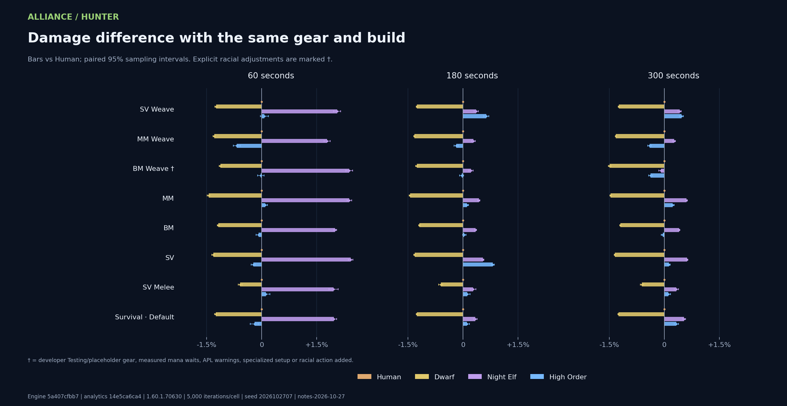
- BM Weave: Mana-limitedMana racial unused Mean recorded out-of-mana time exceeds 5% of fight length in at least one cell. Read Leyline is unused in a mana-limited cell. Its supplied APL is retained; no mana cooldown optimization is performed.
Exact DPS, paired uncertainty, mana waits and pet damage
| Build | Fight | Race | DPS | 95% half-width | vs Human | Paired half-width | OOM time | Pet DPS | Offensive racial casts | Read Leyline casts |
|---|---|---|---|---|---|---|---|---|---|---|
| SV Weave | 60s | Night Elf | 1099.27 | ±1.74 | +2.056% | ±0.097 pp | 0.00s | 0.00 | 1 | None |
| SV Weave | 60s | High Order | 1077.89 | ±1.70 | +0.071% | ±0.109 pp | 0.00s | 0.00 | None | 0 |
| SV Weave | 60s | Human | 1077.12 | ±1.72 | +0.000% | ±0.000 pp | 0.00s | 0.00 | None | None |
| SV Weave | 60s | Dwarf | 1063.73 | ±1.69 | -1.243% | ±0.031 pp | 0.00s | 0.00 | None | None |
| SV Weave | 180s | High Order | 1069.38 | ±1.00 | +0.633% | ±0.071 pp | 0.00s | 0.00 | None | 0 |
| SV Weave | 180s | Night Elf | 1066.46 | ±1.00 | +0.358% | ±0.060 pp | 0.00s | 0.00 | 1 | None |
| SV Weave | 180s | Human | 1062.66 | ±1.01 | +0.000% | ±0.000 pp | 0.00s | 0.00 | None | None |
| SV Weave | 180s | Dwarf | 1049.31 | ±1.00 | -1.257% | ±0.018 pp | 0.00s | 0.00 | None | None |
| SV Weave | 300s | High Order | 1066.27 | ±0.78 | +0.466% | ±0.057 pp | 0.00s | 0.00 | None | 0 |
| SV Weave | 300s | Night Elf | 1065.72 | ±0.80 | +0.415% | ±0.049 pp | 0.00s | 0.00 | 2 | None |
| SV Weave | 300s | Human | 1061.32 | ±0.80 | +0.000% | ±0.000 pp | 0.00s | 0.00 | None | None |
| SV Weave | 300s | Dwarf | 1048.14 | ±0.79 | -1.242% | ±0.014 pp | 0.00s | 0.00 | None | None |
| MM Weave | 60s | Night Elf | 1047.82 | ±1.61 | +1.780% | ±0.083 pp | 0.00s | 0.00 | 1 | None |
| MM Weave | 60s | Human | 1029.49 | ±1.59 | +0.000% | ±0.000 pp | 0.00s | 0.00 | None | None |
| MM Weave | 60s | High Order | 1022.49 | ±1.60 | -0.680% | ±0.096 pp | 0.00s | 0.00 | None | 0 |
| MM Weave | 60s | Dwarf | 1016.15 | ±1.56 | -1.296% | ±0.030 pp | 0.00s | 0.00 | None | None |
| MM Weave | 180s | Night Elf | 1004.53 | ±0.89 | +0.284% | ±0.047 pp | 0.00s | 0.00 | 1 | None |
| MM Weave | 180s | Human | 1001.69 | ±0.90 | +0.000% | ±0.000 pp | 0.00s | 0.00 | None | None |
| MM Weave | 180s | High Order | 999.82 | ±0.89 | -0.187% | ±0.059 pp | 0.00s | 0.00 | None | 0 |
| MM Weave | 180s | Dwarf | 988.44 | ±0.88 | -1.323% | ±0.018 pp | 0.00s | 0.00 | None | None |
| MM Weave | 300s | Night Elf | 1007.08 | ±0.69 | +0.265% | ±0.038 pp | 0.00s | 0.00 | 2 | None |
| MM Weave | 300s | Human | 1004.42 | ±0.70 | +0.000% | ±0.000 pp | 0.00s | 0.00 | None | None |
| MM Weave | 300s | High Order | 1000.38 | ±0.69 | -0.402% | ±0.047 pp | 0.00s | 0.00 | None | 0 |
| MM Weave | 300s | Dwarf | 991.15 | ±0.68 | -1.321% | ±0.014 pp | 0.00s | 0.00 | None | None |
| BM Weave | 60s | Night Elf | 1050.15 | ±1.18 | +2.387% | ±0.094 pp | 0.00s | 345.12 | 1 | None |
| BM Weave | 60s | Human | 1025.66 | ±1.15 | +0.000% | ±0.000 pp | 0.00s | 338.11 | None | None |
| BM Weave | 60s | High Order | 1025.41 | ±1.17 | -0.024% | ±0.084 pp | 0.00s | 335.14 | None | 0 |
| BM Weave | 60s | Dwarf | 1014.08 | ±1.13 | -1.129% | ±0.029 pp | 0.00s | 334.34 | None | None |
| BM Weave | 180s | Night Elf | 993.45 | ±0.69 | +0.215% | ±0.058 pp | 2.26s | 320.58 | 1 | None |
| BM Weave | 180s | Human | 991.32 | ±0.68 | +0.000% | ±0.000 pp | 0.96s | 318.72 | None | None |
| BM Weave | 180s | High Order | 990.93 | ±0.68 | -0.039% | ±0.056 pp | 2.12s | 316.82 | None | 0 |
| BM Weave | 180s | Dwarf | 978.82 | ±0.67 | -1.260% | ±0.028 pp | 1.62s | 315.08 | None | None |
| BM Weave | 300s | Human | 970.08 | ±0.57 | +0.000% | ±0.000 pp | 18.64s | 314.57 | None | None |
| BM Weave | 300s | Night Elf | 969.15 | ±0.57 | -0.096% | ±0.053 pp | 23.48s | 316.02 | 2 | None |
| BM Weave | 300s | High Order | 966.45 | ±0.56 | -0.374% | ±0.052 pp | 22.79s | 312.31 | None | 0 |
| BM Weave | 300s | Dwarf | 955.64 | ±0.56 | -1.489% | ±0.038 pp | 22.00s | 310.83 | None | None |
| MM | 60s | Night Elf | 802.21 | ±1.34 | +2.389% | ±0.065 pp | 0.00s | 0.00 | 1 | None |
| MM | 60s | High Order | 784.25 | ±1.30 | +0.097% | ±0.059 pp | 0.00s | 0.00 | None | 0 |
| MM | 60s | Human | 783.49 | ±1.31 | +0.000% | ±0.000 pp | 0.00s | 0.00 | None | None |
| MM | 60s | Dwarf | 772.16 | ±1.28 | -1.447% | ±0.037 pp | 0.00s | 0.00 | None | None |
| MM | 180s | Night Elf | 763.75 | ±0.73 | +0.430% | ±0.027 pp | 0.00s | 0.00 | 1 | None |
| MM | 180s | High Order | 761.27 | ±0.72 | +0.105% | ±0.042 pp | 0.00s | 0.00 | None | 0 |
| MM | 180s | Human | 760.47 | ±0.73 | +0.000% | ±0.000 pp | 0.00s | 0.00 | None | None |
| MM | 180s | Dwarf | 749.49 | ±0.71 | -1.445% | ±0.022 pp | 0.00s | 0.00 | None | None |
| MM | 300s | Night Elf | 768.16 | ±0.59 | +0.605% | ±0.022 pp | 0.09s | 0.00 | 2 | None |
| MM | 300s | High Order | 765.29 | ±0.57 | +0.228% | ±0.036 pp | 0.06s | 0.00 | None | 0 |
| MM | 300s | Human | 763.55 | ±0.59 | +0.000% | ±0.000 pp | 0.02s | 0.00 | None | None |
| MM | 300s | Dwarf | 752.38 | ±0.58 | -1.463% | ±0.017 pp | 0.12s | 0.00 | None | None |
| BM | 60s | Night Elf | 886.00 | ±1.01 | +2.000% | ±0.044 pp | 0.00s | 351.11 | 1 | None |
| BM | 60s | Human | 868.62 | ±1.00 | +0.000% | ±0.000 pp | 0.00s | 343.27 | None | None |
| BM | 60s | High Order | 867.87 | ±1.01 | -0.086% | ±0.069 pp | 0.00s | 340.21 | None | 0 |
| BM | 60s | Dwarf | 858.37 | ±0.98 | -1.181% | ±0.026 pp | 0.00s | 339.57 | None | None |
| BM | 180s | Night Elf | 838.92 | ±0.57 | +0.346% | ±0.025 pp | 0.00s | 325.93 | 1 | None |
| BM | 180s | High Order | 836.32 | ±0.57 | +0.035% | ±0.047 pp | 0.00s | 322.16 | None | 0 |
| BM | 180s | Human | 836.02 | ±0.57 | +0.000% | ±0.000 pp | 0.00s | 324.83 | None | None |
| BM | 180s | Dwarf | 826.08 | ±0.56 | -1.190% | ±0.021 pp | 0.00s | 321.25 | None | None |
| BM | 300s | Night Elf | 832.25 | ±0.44 | +0.398% | ±0.023 pp | 0.27s | 322.32 | 2 | None |
| BM | 300s | Human | 828.95 | ±0.44 | +0.000% | ±0.000 pp | 0.11s | 321.26 | None | None |
| BM | 300s | High Order | 828.57 | ±0.44 | -0.046% | ±0.037 pp | 0.26s | 318.63 | None | 0 |
| BM | 300s | Dwarf | 819.01 | ±0.44 | -1.199% | ±0.020 pp | 0.35s | 317.74 | None | None |
| SV | 60s | Night Elf | 718.64 | ±1.10 | +2.426% | ±0.062 pp | 0.00s | 0.00 | 1 | None |
| SV | 60s | Human | 701.62 | ±1.09 | +0.000% | ±0.000 pp | 0.00s | 0.00 | None | None |
| SV | 60s | High Order | 700.00 | ±1.10 | -0.231% | ±0.055 pp | 0.00s | 0.00 | None | 0 |
| SV | 60s | Dwarf | 692.35 | ±1.06 | -1.321% | ±0.036 pp | 0.00s | 0.00 | None | None |
| SV | 180s | High Order | 678.24 | ±0.60 | +0.814% | ±0.039 pp | 0.00s | 0.00 | None | 0 |
| SV | 180s | Night Elf | 676.39 | ±0.62 | +0.540% | ±0.026 pp | 0.00s | 0.00 | 1 | None |
| SV | 180s | Human | 672.76 | ±0.62 | +0.000% | ±0.000 pp | 0.00s | 0.00 | None | None |
| SV | 180s | Dwarf | 663.89 | ±0.60 | -1.319% | ±0.021 pp | 0.00s | 0.00 | None | None |
| SV | 300s | Night Elf | 672.65 | ±0.48 | +0.618% | ±0.022 pp | 0.40s | 0.00 | 2 | None |
| SV | 300s | High Order | 669.35 | ±0.47 | +0.124% | ±0.032 pp | 0.57s | 0.00 | None | 0 |
| SV | 300s | Human | 668.52 | ±0.48 | +0.000% | ±0.000 pp | 0.22s | 0.00 | None | None |
| SV | 300s | Dwarf | 659.52 | ±0.47 | -1.346% | ±0.017 pp | 0.55s | 0.00 | None | None |
| SV Melee | 60s | Night Elf | 837.71 | ±1.32 | +1.956% | ±0.125 pp | 0.00s | 229.02 | 1 | None |
| SV Melee | 60s | High Order | 822.56 | ±1.24 | +0.112% | ±0.112 pp | 0.00s | 224.78 | None | 0 |
| SV Melee | 60s | Human | 821.64 | ±1.25 | +0.000% | ±0.000 pp | 0.00s | 226.35 | None | None |
| SV Melee | 60s | Dwarf | 816.83 | ±1.23 | -0.585% | ±0.055 pp | 0.00s | 224.07 | None | None |
| SV Melee | 180s | Night Elf | 779.98 | ±0.73 | +0.277% | ±0.074 pp | 0.00s | 224.29 | 1 | None |
| SV Melee | 180s | High Order | 778.76 | ±0.72 | +0.119% | ±0.073 pp | 0.00s | 222.59 | None | 0 |
| SV Melee | 180s | Human | 777.83 | ±0.73 | +0.000% | ±0.000 pp | 0.00s | 224.35 | None | None |
| SV Melee | 180s | Dwarf | 773.11 | ±0.72 | -0.607% | ±0.053 pp | 0.00s | 222.07 | None | None |
| SV Melee | 300s | Night Elf | 772.11 | ±0.56 | +0.327% | ±0.058 pp | 0.00s | 223.59 | 2 | None |
| SV Melee | 300s | High Order | 770.40 | ±0.56 | +0.106% | ±0.058 pp | 0.00s | 221.57 | None | 0 |
| SV Melee | 300s | Human | 769.59 | ±0.55 | +0.000% | ±0.000 pp | 0.00s | 223.24 | None | None |
| SV Melee | 300s | Dwarf | 764.89 | ±0.55 | -0.611% | ±0.047 pp | 0.00s | 221.08 | None | None |
| Default | 60s | Night Elf | 1101.39 | ±1.75 | +1.967% | ±0.073 pp | 0.00s | 0.00 | 1 | None |
| Default | 60s | Human | 1080.14 | ±1.72 | +0.000% | ±0.000 pp | 0.00s | 0.00 | None | None |
| Default | 60s | High Order | 1077.98 | ±1.78 | -0.199% | ±0.117 pp | 0.00s | 0.00 | None | 0 |
| Default | 60s | Dwarf | 1066.59 | ±1.69 | -1.254% | ±0.031 pp | 0.00s | 0.00 | None | None |
| Default | 180s | Night Elf | 1066.81 | ±1.01 | +0.335% | ±0.048 pp | 0.00s | 0.00 | 1 | None |
| Default | 180s | High Order | 1064.35 | ±1.00 | +0.104% | ±0.071 pp | 0.00s | 0.00 | None | 0 |
| Default | 180s | Human | 1063.25 | ±1.02 | +0.000% | ±0.000 pp | 0.00s | 0.00 | None | None |
| Default | 180s | Dwarf | 1049.88 | ±1.00 | -1.257% | ±0.018 pp | 0.00s | 0.00 | None | None |
| Default | 300s | Night Elf | 1065.96 | ±0.80 | +0.537% | ±0.043 pp | 0.00s | 0.00 | 2 | None |
| Default | 300s | High Order | 1063.72 | ±0.78 | +0.326% | ±0.056 pp | 0.00s | 0.00 | None | 0 |
| Default | 300s | Human | 1060.27 | ±0.80 | +0.000% | ±0.000 pp | 0.00s | 0.00 | None | None |
| Default | 300s | Dwarf | 1047.01 | ±0.79 | -1.250% | ±0.014 pp | 0.00s | 0.00 | None | None |
Alliance / Priest
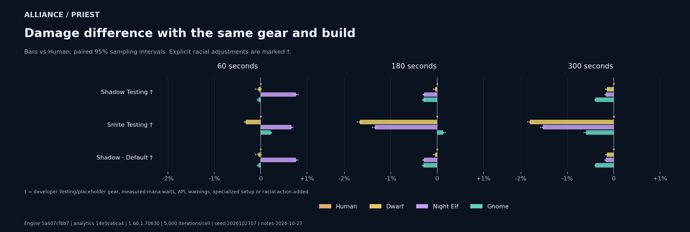
- Shadow Testing: Testing gear Developer loadout is labelled Testing, without a documented common progression tier.
- Smite Testing: Testing gearRacial action added Developer loadout is labelled Testing, without a documented common progression tier. Minimal activation check for RaceNightElf, RaceGnome. Original developer results are preserved.
- Default: Testing gear Developer loadout is labelled Testing, without a documented common progression tier.
Exact DPS, paired uncertainty, mana waits and pet damage
| Build | Fight | Race | DPS | 95% half-width | vs Human | Paired half-width | OOM time | Pet DPS | Offensive racial casts | Read Leyline casts |
|---|---|---|---|---|---|---|---|---|---|---|
| Shadow Testing | 60s | Night Elf | 803.55 | ±1.37 | +0.763% | ±0.045 pp | 0.00s | 0.00 | 1 | None |
| Shadow Testing | 60s | Human | 797.47 | ±1.36 | +0.000% | ±0.000 pp | 0.00s | 0.00 | None | None |
| Shadow Testing | 60s | Dwarf | 797.10 | ±1.30 | -0.046% | ±0.063 pp | 0.00s | 0.00 | None | None |
| Shadow Testing | 60s | Gnome | 797.09 | ±1.35 | -0.047% | ±0.029 pp | 0.00s | 0.00 | 1 | None |
| Shadow Testing | 180s | Human | 792.45 | ±0.79 | +0.000% | ±0.000 pp | 0.00s | 0.00 | None | None |
| Shadow Testing | 180s | Dwarf | 792.12 | ±0.77 | -0.041% | ±0.042 pp | 0.00s | 0.00 | None | None |
| Shadow Testing | 180s | Night Elf | 790.21 | ±0.79 | -0.282% | ±0.023 pp | 0.00s | 0.00 | 1.0036 | None |
| Shadow Testing | 180s | Gnome | 790.08 | ±0.79 | -0.299% | ±0.019 pp | 0.00s | 0.00 | 2 | None |
| Shadow Testing | 300s | Human | 798.48 | ±0.61 | +0.000% | ±0.000 pp | 0.00s | 0.00 | None | None |
| Shadow Testing | 300s | Dwarf | 797.32 | ±0.59 | -0.146% | ±0.035 pp | 0.00s | 0.00 | None | None |
| Shadow Testing | 300s | Night Elf | 797.13 | ±0.60 | -0.169% | ±0.019 pp | 0.00s | 0.00 | 2 | None |
| Shadow Testing | 300s | Gnome | 795.36 | ±0.60 | -0.392% | ±0.016 pp | 0.00s | 0.00 | 3 | None |
| Smite Testing | 60s | Night Elf | 524.10 | ±0.58 | +0.662% | ±0.034 pp | 0.00s | 0.00 | 1 | None |
| Smite Testing | 60s | Gnome | 521.78 | ±0.57 | +0.217% | ±0.019 pp | 0.00s | 0.00 | 1 | None |
| Smite Testing | 60s | Human | 520.66 | ±0.57 | +0.000% | ±0.000 pp | 0.00s | 0.00 | None | None |
| Smite Testing | 60s | Dwarf | 519.00 | ±0.55 | -0.318% | ±0.034 pp | 0.00s | 0.00 | None | None |
| Smite Testing | 180s | Gnome | 419.15 | ±0.41 | +0.130% | ±0.049 pp | 0.00s | 0.00 | 2 | None |
| Smite Testing | 180s | Human | 418.61 | ±0.40 | +0.000% | ±0.000 pp | 0.00s | 0.00 | None | None |
| Smite Testing | 180s | Night Elf | 412.98 | ±0.39 | -1.345% | ±0.052 pp | 0.00s | 0.00 | 1.3194 | None |
| Smite Testing | 180s | Dwarf | 411.62 | ±0.38 | -1.670% | ±0.056 pp | 0.00s | 0.00 | None | None |
| Smite Testing | 300s | Human | 383.02 | ±0.29 | +0.000% | ±0.000 pp | 0.00s | 0.00 | None | None |
| Smite Testing | 300s | Gnome | 380.74 | ±0.30 | -0.595% | ±0.045 pp | 0.00s | 0.00 | 3 | None |
| Smite Testing | 300s | Night Elf | 377.16 | ±0.29 | -1.529% | ±0.047 pp | 0.00s | 0.00 | 2 | None |
| Smite Testing | 300s | Dwarf | 376.08 | ±0.28 | -1.810% | ±0.049 pp | 0.00s | 0.00 | None | None |
| Default | 60s | Night Elf | 803.55 | ±1.37 | +0.763% | ±0.045 pp | 0.00s | 0.00 | 1 | None |
| Default | 60s | Human | 797.47 | ±1.36 | +0.000% | ±0.000 pp | 0.00s | 0.00 | None | None |
| Default | 60s | Dwarf | 797.10 | ±1.30 | -0.046% | ±0.063 pp | 0.00s | 0.00 | None | None |
| Default | 60s | Gnome | 797.09 | ±1.35 | -0.047% | ±0.029 pp | 0.00s | 0.00 | 1 | None |
| Default | 180s | Human | 792.45 | ±0.79 | +0.000% | ±0.000 pp | 0.00s | 0.00 | None | None |
| Default | 180s | Dwarf | 792.12 | ±0.77 | -0.041% | ±0.042 pp | 0.00s | 0.00 | None | None |
| Default | 180s | Night Elf | 790.21 | ±0.79 | -0.282% | ±0.023 pp | 0.00s | 0.00 | 1.0036 | None |
| Default | 180s | Gnome | 790.08 | ±0.79 | -0.299% | ±0.019 pp | 0.00s | 0.00 | 2 | None |
| Default | 300s | Human | 798.48 | ±0.61 | +0.000% | ±0.000 pp | 0.00s | 0.00 | None | None |
| Default | 300s | Dwarf | 797.32 | ±0.59 | -0.146% | ±0.035 pp | 0.00s | 0.00 | None | None |
| Default | 300s | Night Elf | 797.13 | ±0.60 | -0.169% | ±0.019 pp | 0.00s | 0.00 | 2 | None |
| Default | 300s | Gnome | 795.36 | ±0.60 | -0.392% | ±0.016 pp | 0.00s | 0.00 | 3 | None |
Alliance / Druid
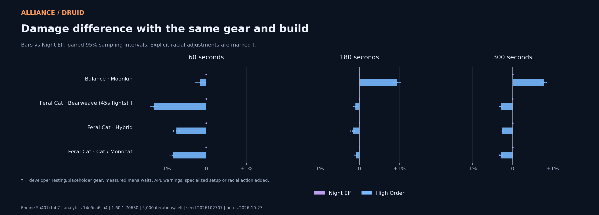
- Bearweave (45s fights): 45s preset Developer rotation is named for 45-second fights; these tests include other durations.
Exact DPS, paired uncertainty, mana waits and pet damage
| Build | Fight | Race | DPS | 95% half-width | vs Night Elf | Paired half-width | OOM time | Pet DPS | Offensive racial casts | Read Leyline casts |
|---|---|---|---|---|---|---|---|---|---|---|
| Moonkin | 60s | Night Elf | 708.80 | ±1.61 | +0.000% | ±0.000 pp | 0.00s | 0.00 | 1 | None |
| Moonkin | 60s | High Order | 707.78 | ±1.62 | -0.145% | ±0.133 pp | 0.00s | 0.00 | None | 0 |
| Moonkin | 180s | High Order | 710.12 | ±0.91 | +0.942% | ±0.090 pp | 0.00s | 0.00 | None | 0 |
| Moonkin | 180s | Night Elf | 703.50 | ±0.91 | +0.000% | ±0.000 pp | 0.00s | 0.00 | 1.0002 | None |
| Moonkin | 300s | High Order | 711.11 | ±0.71 | +0.774% | ±0.073 pp | 0.00s | 0.00 | None | 0 |
| Moonkin | 300s | Night Elf | 705.65 | ±0.71 | +0.000% | ±0.000 pp | 0.00s | 0.00 | 2 | None |
| Bearweave (45s fights) | 60s | Night Elf | 878.71 | ±1.11 | +0.000% | ±0.000 pp | 0.00s | 0.00 | 1 | None |
| Bearweave (45s fights) | 60s | High Order | 867.27 | ±1.12 | -1.303% | ±0.089 pp | 0.00s | 0.00 | None | 0 |
| Bearweave (45s fights) | 180s | Night Elf | 805.61 | ±0.61 | +0.000% | ±0.000 pp | 0.02s | 0.00 | 1 | None |
| Bearweave (45s fights) | 180s | High Order | 804.80 | ±0.61 | -0.100% | ±0.045 pp | 0.02s | 0.00 | None | 0 |
| Bearweave (45s fights) | 300s | Night Elf | 803.31 | ±0.47 | +0.000% | ±0.000 pp | 0.04s | 0.00 | 2 | None |
| Bearweave (45s fights) | 300s | High Order | 800.96 | ±0.47 | -0.292% | ±0.035 pp | 0.03s | 0.00 | None | 0 |
| Hybrid | 60s | Night Elf | 861.90 | ±1.04 | +0.000% | ±0.000 pp | 0.00s | 0.00 | 1 | None |
| Hybrid | 60s | High Order | 855.53 | ±1.06 | -0.739% | ±0.076 pp | 0.00s | 0.00 | None | 0 |
| Hybrid | 180s | Night Elf | 794.26 | ±0.61 | +0.000% | ±0.000 pp | 0.00s | 0.00 | 1 | None |
| Hybrid | 180s | High Order | 792.93 | ±0.62 | -0.167% | ±0.046 pp | 0.00s | 0.00 | None | 0 |
| Hybrid | 300s | Night Elf | 788.93 | ±0.45 | +0.000% | ±0.000 pp | 0.03s | 0.00 | 2 | None |
| Hybrid | 300s | High Order | 786.92 | ±0.45 | -0.255% | ±0.033 pp | 0.02s | 0.00 | None | 0 |
| Cat / Monocat | 60s | Night Elf | 875.04 | ±1.06 | +0.000% | ±0.000 pp | 0.00s | 0.00 | 1 | None |
| Cat / Monocat | 60s | High Order | 867.81 | ±1.07 | -0.826% | ±0.075 pp | 0.00s | 0.00 | None | 0 |
| Cat / Monocat | 180s | Night Elf | 805.61 | ±0.61 | +0.000% | ±0.000 pp | 0.00s | 0.00 | 1 | None |
| Cat / Monocat | 180s | High Order | 804.95 | ±0.61 | -0.082% | ±0.044 pp | 0.00s | 0.00 | None | 0 |
| Cat / Monocat | 300s | Night Elf | 803.49 | ±0.47 | +0.000% | ±0.000 pp | 0.03s | 0.00 | 2 | None |
| Cat / Monocat | 300s | High Order | 801.15 | ±0.47 | -0.291% | ±0.034 pp | 0.02s | 0.00 | None | 0 |
Alliance / Shaman
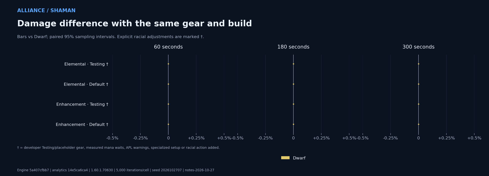
- Testing: Testing gear Developer loadout is labelled Testing, without a documented common progression tier.
- Default: Testing gearMana-limited Developer loadout is labelled Testing, without a documented common progression tier. Mean recorded out-of-mana time exceeds 5% of fight length in at least one cell.
- Testing: Testing gearMana-limited Developer loadout is labelled Testing, without a documented common progression tier. Mean recorded out-of-mana time exceeds 5% of fight length in at least one cell.
- Default: Testing gear Developer loadout is labelled Testing, without a documented common progression tier.
Exact DPS, paired uncertainty, mana waits and pet damage
| Build | Fight | Race | DPS | 95% half-width | vs Dwarf | Paired half-width | OOM time | Pet DPS | Offensive racial casts | Read Leyline casts |
|---|---|---|---|---|---|---|---|---|---|---|
| Testing | 60s | Dwarf | 615.11 | ±1.29 | +0.000% | ±0.000 pp | 0.00s | 0.00 | None | None |
| Testing | 180s | Dwarf | 597.19 | ±0.73 | +0.000% | ±0.000 pp | 0.00s | 0.00 | None | None |
| Testing | 300s | Dwarf | 585.25 | ±0.65 | +0.000% | ±0.000 pp | 12.86s | 0.00 | None | None |
| Default | 60s | Dwarf | 586.57 | ±1.23 | +0.000% | ±0.000 pp | 0.00s | 0.00 | None | None |
| Default | 180s | Dwarf | 514.54 | ±0.84 | +0.000% | ±0.000 pp | 27.71s | 0.00 | None | None |
| Default | 300s | Dwarf | 447.83 | ±0.67 | +0.000% | ±0.000 pp | 110.34s | 0.00 | None | None |
| Testing | 60s | Dwarf | 844.56 | ±1.58 | +0.000% | ±0.000 pp | 0.00s | 0.00 | None | None |
| Testing | 180s | Dwarf | 774.71 | ±0.89 | +0.000% | ±0.000 pp | 0.00s | 0.00 | None | None |
| Testing | 300s | Dwarf | 755.88 | ±0.74 | +0.000% | ±0.000 pp | 19.98s | 0.00 | None | None |
| Default | 60s | Dwarf | 778.43 | ±1.42 | +0.000% | ±0.000 pp | 0.00s | 0.00 | None | None |
| Default | 180s | Dwarf | 690.66 | ±0.74 | +0.000% | ±0.000 pp | 0.00s | 0.00 | None | None |
| Default | 300s | Dwarf | 692.91 | ±0.58 | +0.000% | ±0.000 pp | 1.84s | 0.00 | None | None |
Alliance / Paladin
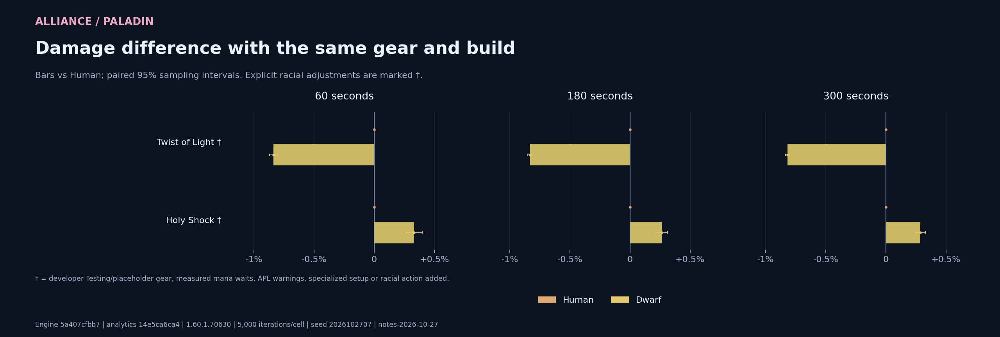
- Twist of Light: Placeholder Developer gear description calls this a placeholder.
- Holy Shock: Placeholder Developer gear description calls this a placeholder.
Exact DPS, paired uncertainty, mana waits and pet damage
| Build | Fight | Race | DPS | 95% half-width | vs Human | Paired half-width | OOM time | Pet DPS | Offensive racial casts | Read Leyline casts |
|---|---|---|---|---|---|---|---|---|---|---|
| Twist of Light | 60s | Human | 846.76 | ±2.23 | +0.000% | ±0.000 pp | 0.00s | 0.00 | None | None |
| Twist of Light | 60s | Dwarf | 839.65 | ±2.21 | -0.839% | ±0.033 pp | 0.00s | 0.00 | None | None |
| Twist of Light | 180s | Human | 842.24 | ±1.27 | +0.000% | ±0.000 pp | 0.00s | 0.00 | None | None |
| Twist of Light | 180s | Dwarf | 835.23 | ±1.26 | -0.833% | ±0.019 pp | 0.00s | 0.00 | None | None |
| Twist of Light | 300s | Human | 844.73 | ±0.99 | +0.000% | ±0.000 pp | 0.00s | 0.00 | None | None |
| Twist of Light | 300s | Dwarf | 837.81 | ±0.98 | -0.819% | ±0.015 pp | 0.00s | 0.00 | None | None |
| Holy Shock | 60s | Dwarf | 848.86 | ±1.35 | +0.332% | ±0.066 pp | 0.00s | 0.00 | None | None |
| Holy Shock | 60s | Human | 846.06 | ±1.39 | +0.000% | ±0.000 pp | 0.00s | 0.00 | None | None |
| Holy Shock | 180s | Dwarf | 819.53 | ±0.77 | +0.263% | ±0.048 pp | 0.00s | 0.00 | None | None |
| Holy Shock | 180s | Human | 817.38 | ±0.80 | +0.000% | ±0.000 pp | 0.00s | 0.00 | None | None |
| Holy Shock | 300s | Dwarf | 814.38 | ±0.59 | +0.288% | ±0.040 pp | 0.00s | 0.00 | None | None |
| Holy Shock | 300s | Human | 812.04 | ±0.61 | +0.000% | ±0.000 pp | 0.00s | 0.00 | None | None |
Inspect the builds
Equipment, named talents, enabled and disabled rotation actions, final stats, raw inputs and confirmation results.
| Faction | Spec / preset | Inspection |
|---|---|---|
| horde | Balance Druid / Moonkin | Open build |
| horde | Feral Cat / Bearweave (45s fights) | Open build |
| horde | Feral Cat / Hybrid | Open build |
| horde | Feral Cat / Cat / Monocat | Open build |
| horde | Survival Hunter / SV Weave | Open build |
| horde | Marksmanship Hunter / MM Weave | Open build |
| horde | Beast Mastery Hunter / BM Weave | Open build |
| horde | Marksmanship Hunter / MM | Open build |
| horde | Beast Mastery Hunter / BM | Open build |
| horde | Survival Hunter / SV | Open build |
| horde | Survival Hunter / SV Melee | Open build |
| horde | Survival Hunter / Default | Open build |
| horde | Arcane Mage / Arcane Frost | Open build |
| horde | Arcane Mage / Arcane Fire | Open build |
| horde | Fire / Frost Mage / FFB | Open build |
| horde | Fire Mage / Fire | Open build |
| horde | Frost Mage / Frost | Open build |
| horde | Retribution Paladin / Twist of Light | Open build |
| horde | Holy Shock DPS Paladin / Holy Shock | Open build |
| horde | Shadow Priest / Shadow Testing | Open build |
| horde | Smite Priest / Smite Testing | Open build |
| horde | Shadow Priest / Default | Open build |
| horde | Combat Rogue / Combat SS | Open build |
| horde | Combat Rogue / Combat BS | Open build |
| horde | Subtlety Rogue / Subtlety Hemo | Open build |
| horde | Subtlety Rogue / Subtlety BS | Open build |
| horde | Elemental Shaman / Testing | Open build |
| horde | Elemental Shaman / Default | Open build |
| horde | Enhancement Shaman / Testing | Open build |
| horde | Enhancement Shaman / Default | Open build |
| horde | Demonology Warlock / Demo (Fire Brand) | Open build |
| horde | Demonology Warlock / Demo (Shadow Brand) | Open build |
| horde | Destruction Warlock / Destro | Open build |
| horde | Affliction Warlock / SM/Ruin | Open build |
| horde | Affliction Warlock / Aff (Wrack) | Open build |
| horde | Demonology Warlock / Default | Open build |
| horde | Fury Warrior / Fury / Pre-BiS | Open build |
| horde | Arms Warrior / Arms / Pre-BiS | Open build |
| alliance | Balance Druid / Moonkin | Open build |
| alliance | Feral Cat / Bearweave (45s fights) | Open build |
| alliance | Feral Cat / Hybrid | Open build |
| alliance | Feral Cat / Cat / Monocat | Open build |
| alliance | Survival Hunter / SV Weave | Open build |
| alliance | Marksmanship Hunter / MM Weave | Open build |
| alliance | Beast Mastery Hunter / BM Weave | Open build |
| alliance | Marksmanship Hunter / MM | Open build |
| alliance | Beast Mastery Hunter / BM | Open build |
| alliance | Survival Hunter / SV | Open build |
| alliance | Survival Hunter / SV Melee | Open build |
| alliance | Survival Hunter / Default | Open build |
| alliance | Arcane Mage / Arcane Frost | Open build |
| alliance | Arcane Mage / Arcane Fire | Open build |
| alliance | Fire / Frost Mage / FFB | Open build |
| alliance | Fire Mage / Fire | Open build |
| alliance | Frost Mage / Frost | Open build |
| alliance | Retribution Paladin / Twist of Light | Open build |
| alliance | Holy Shock DPS Paladin / Holy Shock | Open build |
| alliance | Shadow Priest / Shadow Testing | Open build |
| alliance | Smite Priest / Smite Testing | Open build |
| alliance | Shadow Priest / Default | Open build |
| alliance | Combat Rogue / Combat SS | Open build |
| alliance | Combat Rogue / Combat BS | Open build |
| alliance | Subtlety Rogue / Subtlety Hemo | Open build |
| alliance | Subtlety Rogue / Subtlety BS | Open build |
| alliance | Elemental Shaman / Testing | Open build |
| alliance | Elemental Shaman / Default | Open build |
| alliance | Enhancement Shaman / Testing | Open build |
| alliance | Enhancement Shaman / Default | Open build |
| alliance | Demonology Warlock / Demo (Fire Brand) | Open build |
| alliance | Demonology Warlock / Demo (Shadow Brand) | Open build |
| alliance | Destruction Warlock / Destro | Open build |
| alliance | Affliction Warlock / SM/Ruin | Open build |
| alliance | Affliction Warlock / Aff (Wrack) | Open build |
| alliance | Demonology Warlock / Default | Open build |
| alliance | Fury Warrior / Fury / Pre-BiS | Open build |
| alliance | Arms Warrior / Arms / Pre-BiS | Open build |
Inputs and provenance
Simulator 14e5ca6ca41b4f9253d2d54b41bb380380261be8; upstream source 5a407cfbb7924f8e03ce732437b6d61ac1ded8bb. Game builds {"druid": "1.60.1.70630", "hunter": "1.60.1.70630", "items": "1.60.1.70630", "mage": "1.60.1.70630", "paladin": "1.60.1.70630", "priest": "1.60.1.70630", "racials": "1.60.1.70630", "rogue": "1.60.1.70630", "shaman": "1.60.1.70630", "shared": "1.60.1.70630", "warlock": "1.60.1.70630", "warrior": "1.60.1.70630"}; hotfixes {"druid": 113205, "hunter": 113205, "items": 113205, "mage": 113205, "paladin": 113205, "priest": 113205, "racials": 113205, "rogue": 113205, "shaman": 113205, "shared": 113205, "warlock": 113205, "warrior": 113205}. Tracked state: clean.
- One level-63 MobTypeMechanical target, 3,731 armor, exact durations, zero duration variation, 20%/35% execute windows, no incoming damage or forced encounter movement. Developer APL movement remains enabled. Pet damage is included.
- The shared raid/party/individual buffs and debuffs are preserved in profiles.json and every request. This is an abstract support configuration, not a validated raid roster. The current engine permits Windfury with Grace of Air. Utility, healing, tank survival and PvP are outside this damage objective.
- Current UI code exports equipment, enchants, item swaps, talents, professions, consumables and resolved rotations. Warlock uses the documented repository pre-raid fallback. No items are scored or optimized. Only reviewed faction counterparts with matching combat data are allowed, with per-iteration native equivalence controls. Unknown mappings or potentially active set changes stop the run.
- Race eligibility comes from the current generated class capabilities. New unknown race/faction assignments stop the run for policy review. Unsupported presets are retained in the coverage list below. One-race cases show eligibility only, not a damage advantage.
- Primary and target-type samples use seed 2026102707. Independent confirmations use a separate seed and rerun only the leading pair. Exact counts and seeds are in cells.json. Paired ratios use aligned iteration seeds, sample variance and delta-method uncertainty. Intervals measure Monte Carlo error, with no family-wise multiple-comparison correction.
- Offensive on-use racial casts are checked at every duration. If a racial remains unused throughout, an additional controlled APL case adds only its spell-is-known guarded cast to every race. Original inputs/results remain saved. Unaffected races must reproduce every damage iteration. A still-unused offensive racial withholds the ranking. Existing active cooldown timing and mana tools remain the supplied APL behavior.
- Read Leyline cast counts are recorded. No mana cooldown threshold or timing is invented. A mana-limited cell with unused Read Leyline receives a separate caveat. Gnome resource effects, Priest class racials and all other effects remain the recorded engine implementation.
- An independent NumPy calculation checks means and covariance-based paired intervals. Request/result hashes, faction legality, race-only input differences, control equivalence, engine hashes and artifact links are verified. Source and tool hashes must remain unchanged during execution. These checks do not establish in-game accuracy.
- The default model is upstream. The optional dated notes adapter is explicit and fails on unrecognized source changes. Current source statements and model findings are distinct. The local developer library was consulted; the October 27 clarification is newer than its older S027 racial snapshot.
- The reusable commands, dependency setup, update workflow, resume and verified reuse behavior are documented in tools/dps-experiments/README.md. Generated archives stay local under ignored tmp/. Every run has its own immutable snapshot and report.
Coverage limitations
- Rogue / Asn Muti: The supplied Rogue rotation has no Mutilate action. This profile is retained for coverage and excluded from rankings.
- Rogue / Combat Muti: The supplied Rogue rotation has no Mutilate action. This profile is retained for coverage and excluded from rankings.
Source: Blizzard racial clarification. Recommendations here are simulation findings.
Downloads and verification
Primary CSV · Analysis · Presets and exact support · APL adjustments · APL validations · Provenance · All cell summaries · Equivalence controls · Independent numerical review · Completion · Artifact hashes
Horde poster · SVG · Alliance poster · SVG